# Chargement des packages
library(tidyverse)
library(readr)
library(tidyr)
library(xts)
library(TTR)
library(moments)
library(corrplot)
library(ggplot2)Introduction
Pour ce projet, nous nous intéresserons à 9 fonds d’investissement socialement responsable (ISR) suivants, disponibles sur le site Yahoo Finance.
Amundi CPR Climate Action I: Ce fonds d’investissement est géré par une équipe expérimentée chez Amundi, l’un des leaders mondiaux de la gestion d’actifs. Le fonds Amundi CPR Climate Action I se concentre sur les investissements durables et responsables, notamment dans des entreprises qui contribuent activement à la lutte contre le changement climatique et à la promotion d’une économie plus verte.
MainFirst Global Equities X: Géré par MainFirst, une société de gestion d’actifs reconnue, ce fonds offre une exposition diversifiée aux marchés mondiaux des actions. MainFirst Global Equities X vise à tirer parti des opportunités d’investissement à l’échelle mondiale, en mettant l’accent sur la sélection rigoureuse des actions offrant un potentiel de croissance durable à long terme.
The Andersons : (ANDE): The Andersons est une société diversifiée bien établie, engagée dans plusieurs secteurs d’activité, y compris l’agriculture, l’ingénierie et le commerce. Son ticker symbol (ANDE) indique sa cotation en bourse et son rôle important dans l’économie américaine.
Carmignac Emergents: Ce fonds, géré par Carmignac Gestion, se concentre sur les marchés émergents, offrant aux investisseurs une opportunité de diversification géographique et un potentiel de croissance supérieur. Carmignac Emergents vise à identifier les entreprises prometteuses dans les économies en développement et à générer des rendements attractifs à long terme.
Pluvalca Sustainable Opportunities: Géré par Pluvalca Investissement, ce fonds met l’accent sur les opportunités d’investissement durable et responsable. Pluvalca Sustainable Opportunities cherche à investir dans des entreprises qui intègrent des critères environnementaux, sociaux et de gouvernance (ESG) dans leur modèle d’affaires, tout en offrant un potentiel de croissance attrayant.
Fidelity Sustainable Water & Waste R Acc: Ce fonds, géré par Fidelity Investments, se concentre sur les investissements dans des entreprises liées à la gestion de l’eau et des déchets, avec un accent particulier sur la durabilité et l’impact environnemental. Fidelity Sustainable Water & Waste R Acc vise à générer des rendements solides tout en contribuant à des objectifs environnementaux et sociaux positifs.
Epsens EdR Tricolore Rendement: Géré par Edmond de Rothschild Asset Management, ce fonds vise à générer des rendements attrayants en investissant principalement dans des actions françaises. Epsens EdR Tricolore Rendement bénéficie de l’expertise et de l’expérience de l’équipe de gestion d’actifs d’Edmond de Rothschild pour identifier les opportunités d’investissement sur les marchés français.
Thematics Water R/A USD: Ce fonds, géré par Thematics Asset Management, se concentre sur les investissements dans des entreprises liées au secteur de l’eau. Thematics Water R/A USD offre aux investisseurs une exposition à un thème d’investissement spécifique, tout en cherchant à capturer les opportunités de croissance dans un secteur essentiel à long terme.
AIS Mandarine Global Transition: Géré par Mandarine Gestion, ce fonds vise à investir dans des entreprises ou des projets qui contribuent à la transition vers une économie plus durable. AIS Mandarine Global Transition cherche à identifier les leaders du marché dans des secteurs clés de la transition énergétique et environnementale, offrant ainsi aux investisseurs une exposition à long terme à des thèmes d’investissement stratégiques.
Exercice 1 : Calcul de rendements, statistiques usuelles et performance des titres
1. Calculer et représenter les prix et les rendements de chacun des fonds en fonction du temps. Commentez les résultats.
Titres Amundi CPR Climate Action I Les résultats pour le fonds “Amundi CPR Climate Action I” montrent une évolution intéressante des prix et des rendements tout au long de l’année 2023.
# Import des données
X0P0001IYTY_F <- read_csv("./Databases/0P0001IYTY.F.csv")
data1 <- X0P0001IYTY_F
# Convertir les colonnes Open et Close en type numérique
data1 <- data1 %>%
mutate(Open = as.numeric(Open),
Close = as.numeric(Close))
# Conversion de la colonne de date en format Date
data1$Date <- as.Date(data1$Date)
# Remplacement des valeurs null ou manquantes par NA
data1[is.na(data1)] <- NA
# Supprimer les lignes contenant des valeurs manquantes
data1 <- na.omit(data1)
# Calculer les rendements pour l'ensemble des données
data1 <- data1 %>%
arrange(Date) %>%
mutate(Rendement = Close / lag(Close) - 1)
data1 <- data1 %>%
mutate(Rendement = replace_na(Rendement, 0))
# Représentation des prix
ggplot(data1, aes(x = Date, y = Close)) +
geom_line() +
labs(title = "Évolution des prix des titres Amundi CPR Climate Action I",
x = "Date",
y = "Prix de clôture") +
theme_minimal()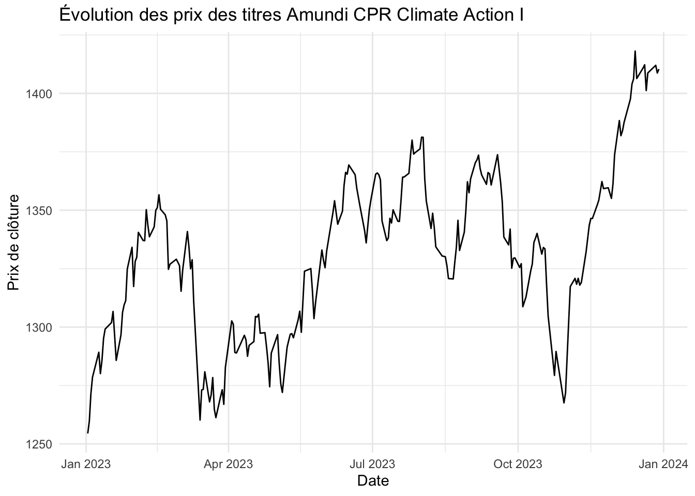
Les prix moyens semblent fluctuer au fil des mois, avec une tendance générale à la hausse au début de l’année, suivie d’une période de fluctuation, de légère baisse au début du quatrième semestre, et finalement d’une forte hausse vers la fin de l’année. En particulier, une augmentation notable des prix est observée en mars, suivie d’une légère baisse en avril et mai, puis une tendance à la hausse en juin et juillet. Ensuite, nous constatons une certaine volatilité avec des variations jusqu’à la fin de l’année.
# Représentation des rendements
ggplot(data1, aes(x = Date, y = Rendement)) +
geom_line() +
labs(title = "Évolution des rendements des titres Amundi CPR Climate Action I",
x = "Date",
y = "Rendement") +
theme_minimal()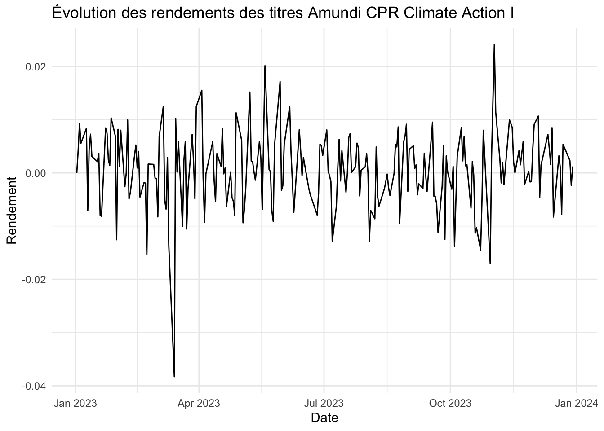
Les rendements moyens montrent également une variabilité mensuelle. Nous observons des rendements positifs en janvier, février, mai, juin et novembre, avec des performances particulièrement fortes en novembre. Cependant, il y a aussi des mois avec des rendements négatifs, tels que mars, septembre et octobre.
En général, ces résultats suggèrent une certaine volatilité dans les performances du fonds “Amundi CPR Climate Action I” au cours de l’année 2023. Il serait intéressant de creuser davantage pour comprendre les facteurs sous-jacents qui ont influencé ces fluctuations de prix et de rendements, ainsi que d’analyser la performance relative par rapport à d’autres fonds d’investissement socialement responsables.
Titres MainFirst Global Equities X Les résultats pour le fonds MainFirst Global Equities X montrent une évolution des prix moyens et des rendements moyens au fil du temps pour chaque mois de l’année 2023.
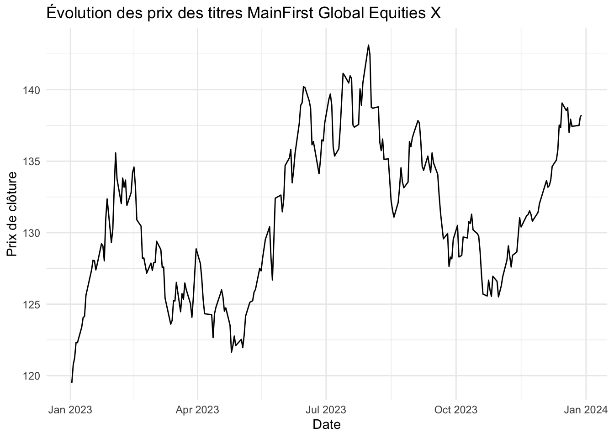
On observe une variation des prix moyens du fonds tout au long de l’année 2023. Les prix moyens semblent fluctuer, avec des hauts et des bas d’un mois à l’autre. Par exemple, les prix moyens atteignent leur plus bas niveau en mars (126) et leur plus haut niveau en juillet (139), avec des variations entre ces extrêmes au cours des autres mois.
Les rendements moyens du fonds présentent également des variations mensuelles. Certains mois affichent des rendements positifs, tandis que d’autres affichent des rendements négatifs. Par exemple, les rendements moyens sont positifs en janvier, juin, juillet et novembre, tandis qu’ils sont négatifs en février, avril, août et septembre.
Bien que les prix et les rendements fluctuent d’un mois à l’autre, il semble y avoir certaines tendances générales au fil de l’année. Par exemple, les prix semblent augmenter progressivement au cours des premiers mois de l’année, avec un pic en juillet, avant de baisser légèrement vers la fin de l’année. Les rendements moyens semblent également suivre des tendances similaires, bien qu’avec plus de variations d’un mois à l’autre.
Il serait intéressant d’analyser les facteurs externes qui ont pu influencer les performances du fonds au cours de cette période, tels que les conditions économiques mondiales, les événements politiques, ou les tendances du marché financier. Ces facteurs pourraient expliquer les variations observées dans les prix et les rendements du fonds.
En résumé, l’analyse des prix moyens et des rendements moyens du fonds MainFirst Global Equities X pour l’année 2023 montre une évolution fluctuante mais présentant certaines tendances générales au fil du temps. Une analyse plus approfondie des facteurs influents pourrait fournir des insights supplémentaires sur les performances du fonds.
Titres The Andersons : (ANDE) Les données fournies présentent les moyennes mensuelles des prix et des rendements pour le fonds The Andersons (ANDE) sur l’année 2023.
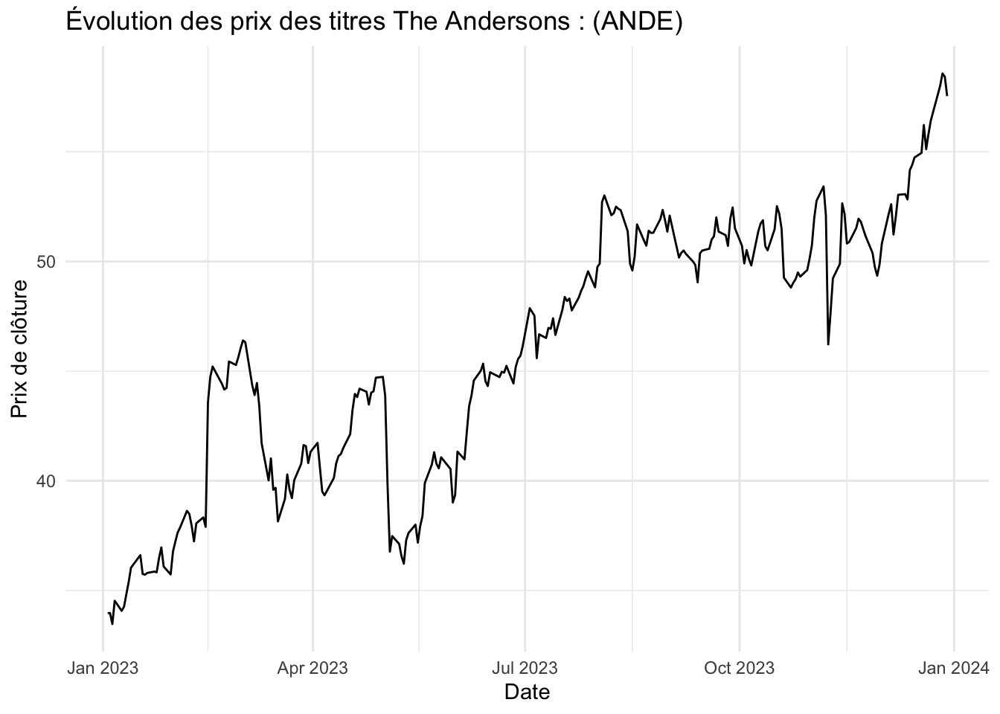
Les prix moyens semblent avoir une tendance générale à la hausse au cours de l’année, avec quelques fluctuations mensuelles. Les prix ont augmenté progressivement jusqu’en juin, puis ont diminué légèrement en juillet et août, pour ensuite augmenter à nouveau jusqu’en décembre, atteignant un niveau plus élevé à la fin de l’année.
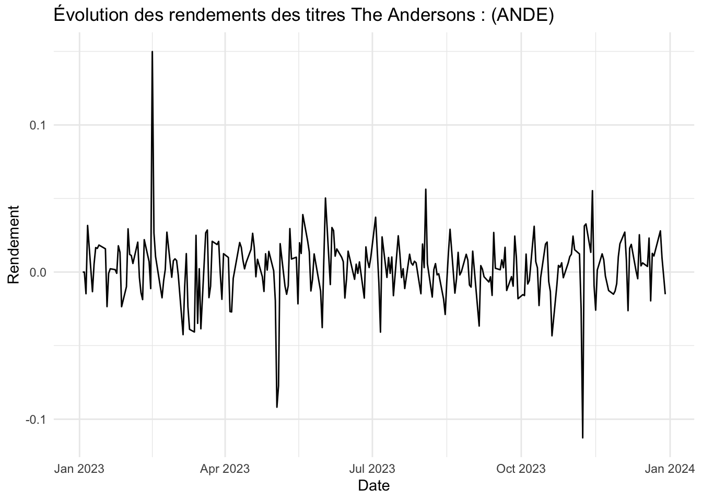
Les rendements moyens présentent une variabilité mensuelle plus prononcée. On observe des fluctuations positives et négatives tout au long de l’année, indiquant une volatilité dans les performances du fonds. Cependant, la tendance globale semble être légèrement positive, avec des rendements positifs plus fréquents que les rendements négatifs.
Il serait intéressant d’examiner s’il existe une corrélation entre les mouvements de prix et les rendements pour ce fonds. Par exemple, des hausses de prix sont-elles généralement suivies de rendements positifs, et vice versa ? Cette analyse pourrait aider à mieux comprendre la dynamique de performance du fonds.
En résumé, les données indiquent une évolution positive des prix moyens au fil du temps, avec des rendements moyens fluctuant mais légèrement positifs sur l’ensemble de l’année. Cependant, une analyse plus approfondie serait nécessaire pour évaluer pleinement les performances du fonds The Andersons (ANDE) et comprendre les facteurs qui influencent ses prix et rendements.
Titres Carmignac Emergents Les résultats montrent l’évolution des prix moyens et des rendements moyens du fonds Carmignac Emergents au cours de l’année 2023.
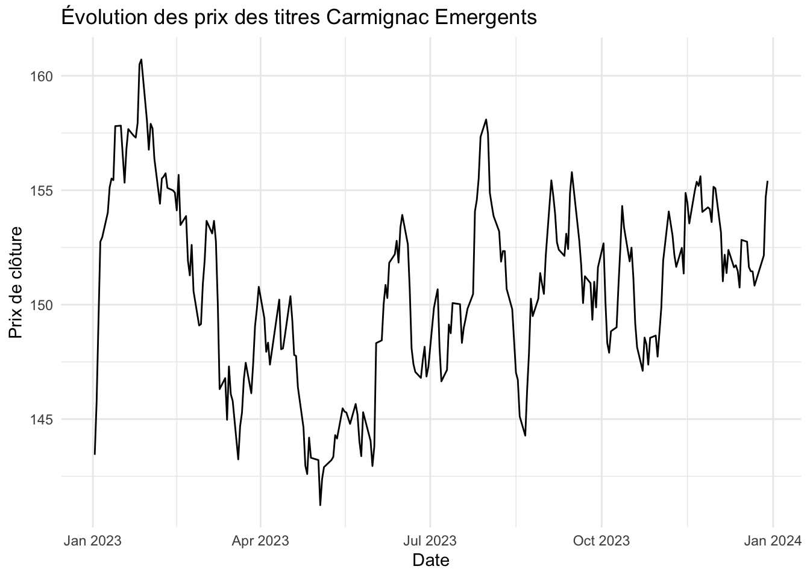
Les prix moyens semblent fluctuer légèrement au cours de l’année, avec des variations relativement modérées. Ils ont atteint leur point le plus bas en mai 2023 à environ 144, puis ont légèrement augmenté pour se situer autour de 152 à la fin de l’année.
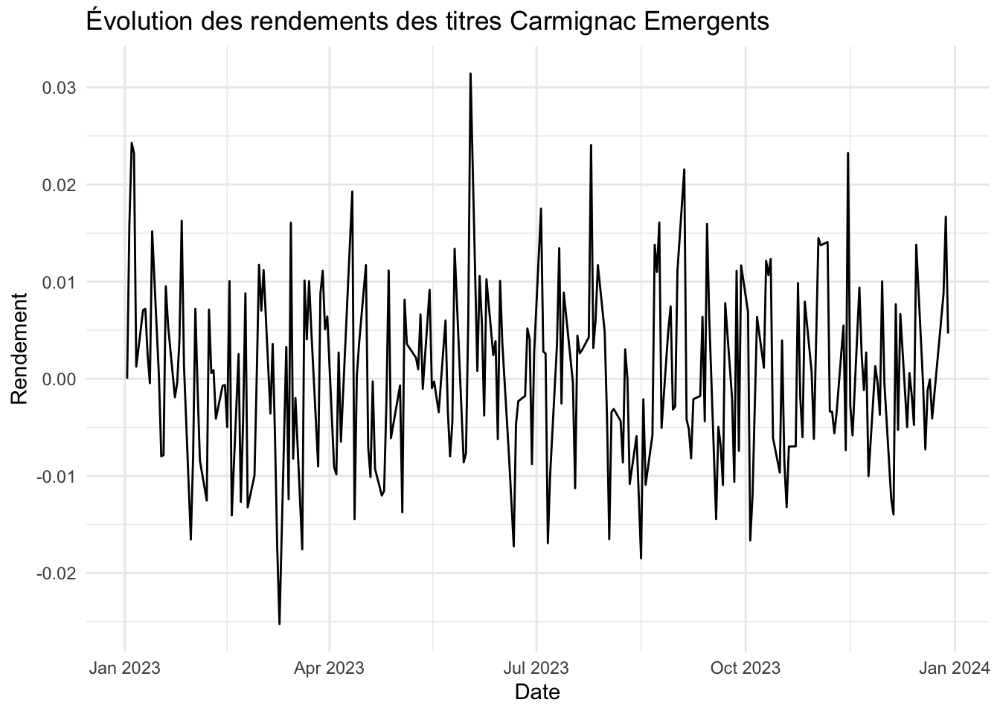
Les rendements moyens du fonds Carmignac Emergents montrent une certaine volatilité au cours de l’année. Ils varient autour de zéro pour la plupart des mois, mais ils présentent quelques fluctuations positives et négatives. En général, les rendements semblent être assez faibles, avec quelques mois de rendements légèrement positifs et d’autres légèrement négatifs.
Globalement, les prix et les rendements du fonds Carmignac Emergents semblent relativement stables au cours de l’année, avec quelques fluctuations modérées mais sans tendance forte à la hausse ou à la baisse.
Ces observations peuvent être utilisées pour évaluer la performance du fonds Carmignac Emergents au cours de l’année 2023 et peuvent aider les investisseurs à prendre des décisions éclairées concernant leur portefeuille d’investissement.
Titres Pluvalca Sustainable Opportunities Les résultats pour le fonds Pluvalca Sustainable Opportunities montrent une variation des prix et des rendements au fil du temps.
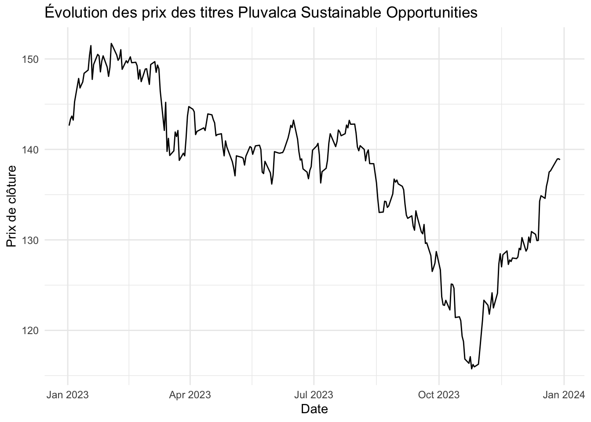
Les prix moyens semblent avoir fluctué au cours de l’année 2023, avec une tendance générale à la baisse jusqu’au mois d’octobre, suivi d’une légère remontée vers la fin de l’année. Cette évolution peut être influencée par divers facteurs économiques et commerciaux qui ont impacté la valeur des actifs détenus par le fonds.
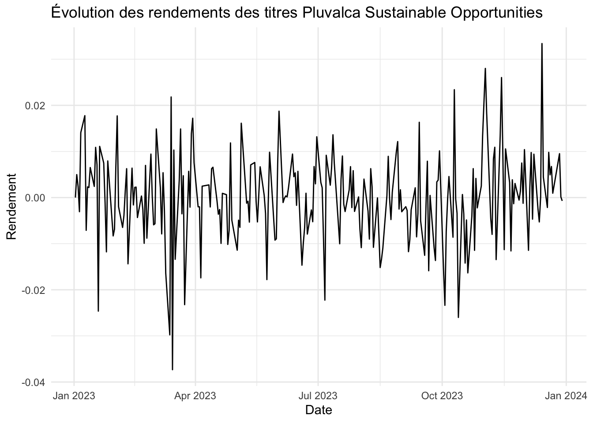
Il est intéressant de noter que les prix et les rendements semblent suivre des tendances saisonnières, avec des mouvements spécifiques observés à différents moments de l’année. Par exemple, une tendance à la baisse des prix et des rendements est observée vers la fin de l’année, tandis qu’une tendance à la hausse est observée vers le début de l’année.
En résumé, l’analyse des prix et des rendements du fonds Pluvalca Sustainable Opportunities indique une certaine volatilité au cours de l’année 2023, avec des fluctuations influencées par divers facteurs économiques et commerciaux.
Titres Fidelity Sustainable Water & Waste R Acc Les données fournies représentent la moyenne mensuelle des prix et des rendements pour le fonds Fidelity Sustainable Water & Waste R Acc sur l’année 2023.
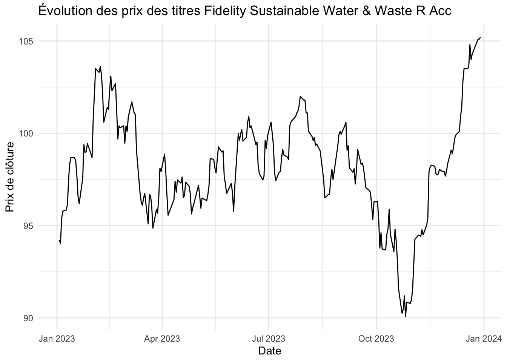
On observe une fluctuation des prix moyens mensuels tout au long de l’année, avec des variations allant de 93,1 à 102. Ces fluctuations peuvent être dues à divers facteurs tels que l’offre et la demande sur le marché, les performances de l’entreprise sous-jacente, ainsi que les conditions macroéconomiques et géopolitiques.
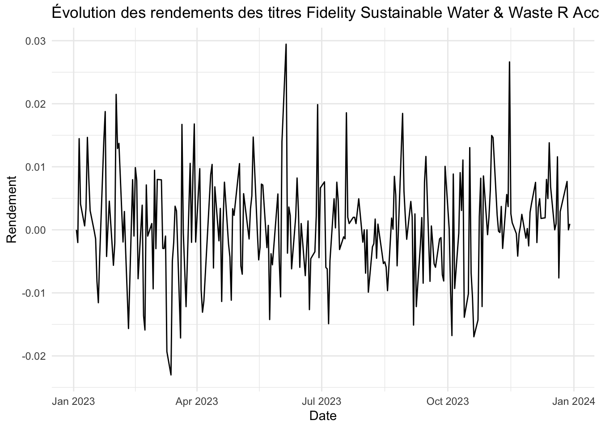
Les rendements moyens mensuels varient également tout au long de l’année, oscillant entre -0,25% et 0,38%. Ces variations reflètent les performances du fonds d’un mois à l’autre. Les rendements positifs indiquent une croissance du capital investi, tandis que les rendements négatifs indiquent une diminution. En regardant les données dans leur ensemble, il semble y avoir une tendance à la hausse des prix et des rendements moyens vers la fin de l’année. Cela suggère que le fonds a peut-être affiché de meilleures performances au cours des derniers mois de l’année.
Pour une analyse plus approfondie, il serait intéressant de comparer ces résultats avec ceux des autres fonds ISR étudiés, ainsi qu’avec des indices de référence du secteur. Cela pourrait fournir des insights supplémentaires sur les performances relatives du fonds par rapport à ses pairs et au marché dans son ensemble.
En résumé, ces données fournissent une vue d’ensemble des performances mensuelles du fonds Fidelity Sustainable Water & Waste R Acc en 2023, mais une analyse plus approfondie est nécessaire pour comprendre pleinement son comportement et son positionnement par rapport à d’autres investissements.
Titres Epsens EdR Tricolore Rendement Les données fournies représentent la moyenne mensuelle des prix et des rendements pour le fonds “Epsens EdR Tricolore Rendement” sur l’année 2023.
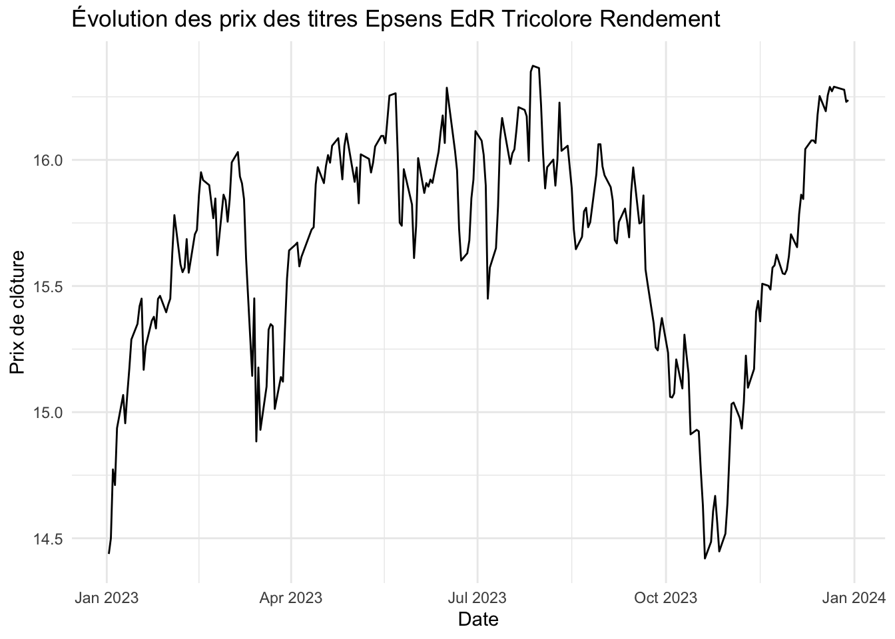
Les prix moyens semblent fluctuer légèrement au cours de l’année, suivi d’une hausse, avec des variations relativement faibles. On observe une légère baisse vers la fin de l’année, avec un prix moyen en décembre légèrement plus élevé que le début de l’année. Cela peut indiquer une stabilité globale des prix, avec quelques variations mineures.
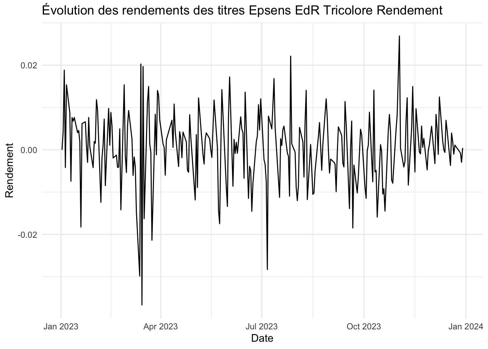
Les rendements moyens varient également au fil des mois, oscillant autour de zéro. Cependant, on peut observer une certaine volatilité des rendements, avec des variations positives et négatives au cours de l’année. En particulier, il y a une augmentation notable des rendements en novembre, suivie d’une légère baisse en décembre.
La stabilité des prix moyens suggère une certaine régularité dans la performance du fonds tout au long de l’année. Cependant, la volatilité des rendements indique une certaine variabilité dans la performance mensuelle du fonds. Il peut être intéressant d’approfondir l’analyse pour comprendre les facteurs sous-jacents à ces variations de rendements.
En résumé, les données montrent une certaine stabilité des prix moyens avec une variabilité des rendements mensuels pour le fonds “Epsens EdR Tricolore Rendement” en 2023. Une analyse plus approfondie pourrait aider à mieux comprendre les performances et les tendances de ce fonds au fil du temps.
Titres Thematics Water R/A USD Les résultats pour data8_mois montrent la moyenne mensuelle des prix et des rendements pour le fonds Thematics Water R/A USD pour l’année 2023.
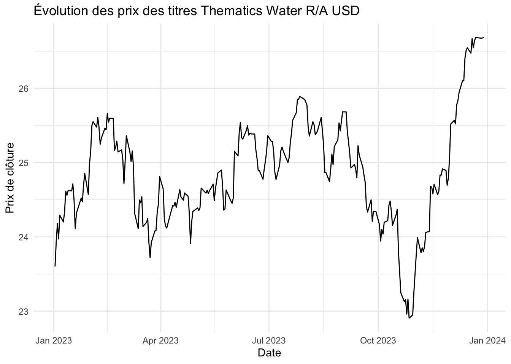
La moyenne mensuelle des prix oscille autour de 24,4 USD à 26,3 USD au cours de l’année. On observe une légère augmentation du prix moyen au début de l’année, suivie de fluctuations légères mais relativement stables tout au long de l’année.
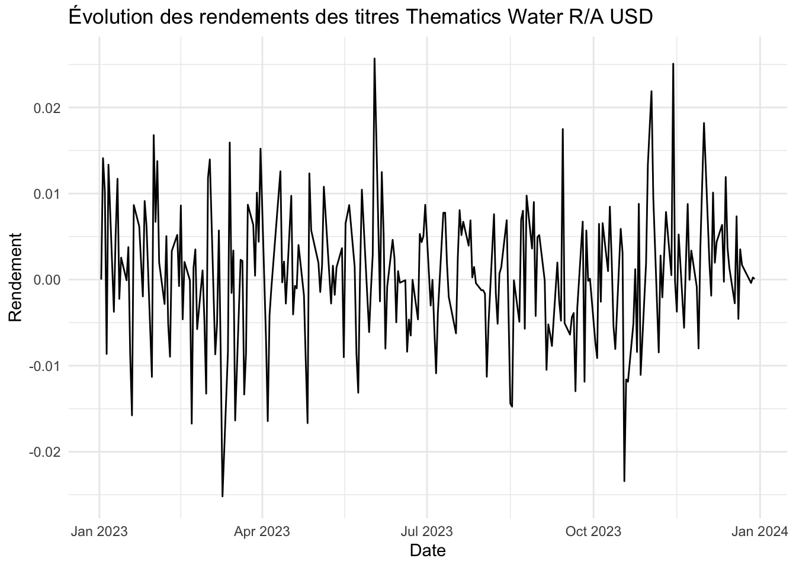
Les rendements moyens varient entre -0,22% et 0,36% par mois. On observe une certaine volatilité dans les rendements, avec des mois positifs et négatifs alternant tout au long de l’année. Le rendement le plus élevé est observé en novembre, tandis que le rendement le plus bas est enregistré en septembre.
Les tendances mensuelles des prix et des rendements peuvent être utilisées pour évaluer la performance du fonds au fil du temps. Par exemple, une tendance à la hausse des prix et des rendements peut indiquer une performance solide du fonds, tandis qu’une volatilité accrue peut nécessiter une analyse plus approfondie pour comprendre les facteurs sous-jacents.
En résumé, l’analyse des moyennes mensuelles des prix et des rendements fournit un aperçu de la performance du fonds Thematics Water R/A USD en 2023, en mettant en évidence les variations mensuelles et la volatilité des rendements. Ces informations peuvent être utiles pour les investisseurs dans leur processus de prise de décision.
Titres AIS Mandarine Global Transition Les résultats montrent la moyenne mensuelle des prix et des rendements du fonds AIS Mandarine Global Transition pour chaque mois de l’année 2023.
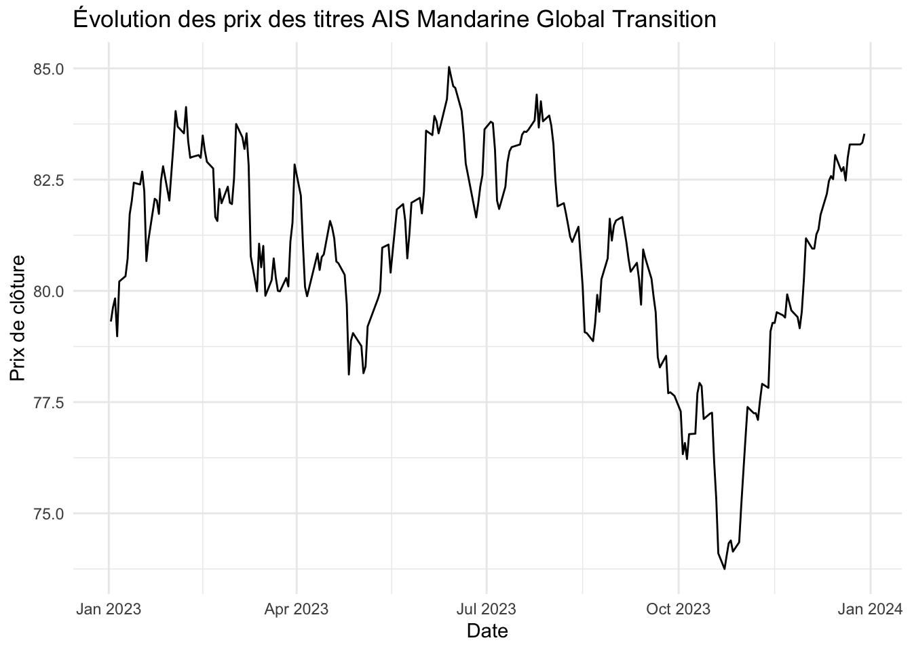
En examinant ces résultats, on peut observer des variations dans les prix moyens et les rendements moyens tout au long de l’année 2023 pour le fonds AIS Mandarine Global Transition. Par exemple, on remarque une baisse des prix moyens en mars et en avril, suivie d’une légère augmentation en mai et juin. De même, les rendements moyens varient également mois par mois, reflétant les fluctuations du marché et les performances du fonds.
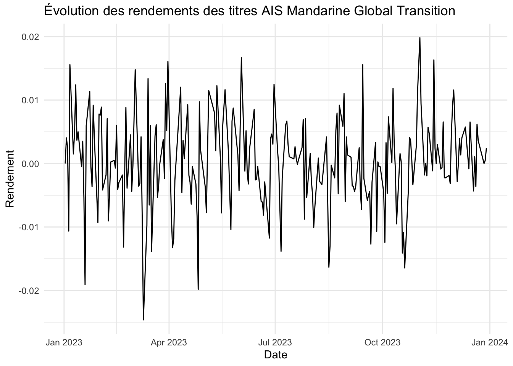
Conclusion
Il semble y avoir une certaine cohérence dans les observations faites pour chaque fonds, malgré les différences dans les détails spécifiques. Pour la plupart des fonds, on observe des variations mensuelles des prix et des rendements, indiquant une certaine volatilité tout au long de l’année 2023. Par exemple, pour le fonds “Amundi CPR Climate Action I”, nous avons observé une tendance générale à la hausse des prix au début de l’année, suivie d’une période de fluctuation et de légère baisse vers la fin de l’année. Les rendements ont également varié, avec des performances positives et négatives tout au long de l’année, indiquant une certaine volatilité dans les performances du fonds.
De même, pour d’autres fonds comme “MainFirst Global Equities X” et “The Andersons (ANDE)”, nous avons observé des tendances similaires de fluctuation des prix et des rendements, avec des variations mensuelles reflétant probablement les conditions économiques et commerciales changeantes. En résumé, ces observations soulignent l’importance d’une analyse approfondie des performances des fonds d’investissement, en examinant à la fois les prix moyens et les rendements moyens pour mieux comprendre leur comportement au fil du temps.
2. Quelles sont les propriétés financières de chacune des séries ?
3. Y a-t-il des retours à la moyenne ? Pouvez-vous identifier des événements d’actualité qui pourraient expliquer des valeurs inhabituelles ?
Amundi CPR Climate Action I
# Calculer la moyenne mobile sur 7 jours
sma_7 <- SMA(data1$Close, n = 7)
# Calculer la moyenne mobile 30 jours
sma_30 <- SMA(data1$Close, n = 30)
# Identifier les croisements entre les moyennes mobiles
crossings <- ifelse(sma_7 > sma_30, "Au-dessus", "En dessous")
crossings <- c(NA, crossings[-length(crossings)]) # décaler le vecteur d'une période
# Créer un data frame avec les données et les croisements
data1_with_crossings <- data.frame(Date = index(data1),
Close = data1$Close,
SMA_7 = sma_7,
SMA_30 = sma_30,
Crossing = crossings)
# Afficher les observations avec des croisements
crossing_points <- data1_with_crossings[!is.na(data1_with_crossings$Crossing), ]
print(crossing_points) Date Close SMA_7 SMA_30 Crossing
31 31 1351.16 1344.769 1313.286 Au-dessus
32 32 1356.61 1347.577 1316.516 Au-dessus
33 33 1350.45 1347.609 1319.149 Au-dessus
34 34 1348.02 1348.240 1321.466 Au-dessus
35 35 1345.42 1349.207 1323.340 Au-dessus
36 36 1324.72 1346.613 1324.828 Au-dessus
37 37 1326.91 1343.327 1326.198 Au-dessus
38 38 1329.02 1340.164 1327.327 Au-dessus
39 39 1327.68 1336.031 1328.278 Au-dessus
40 40 1326.29 1332.580 1329.091 Au-dessus
41 41 1315.33 1327.910 1329.380 Au-dessus
42 42 1324.34 1324.899 1330.315 En dessous
43 43 1340.87 1327.206 1332.152 En dessous
44 44 1334.03 1328.223 1333.400 En dessous
45 45 1324.95 1327.641 1334.023 En dessous
46 46 1328.80 1327.801 1334.667 En dessous
47 47 1310.38 1325.529 1334.636 En dessous
48 48 1260.21 1317.654 1332.482 En dessous
49 49 1273.10 1310.334 1330.448 En dessous
50 50 1273.32 1300.684 1328.980 En dessous
51 51 1280.85 1293.087 1327.403 En dessous
52 52 1267.98 1284.949 1325.340 En dessous
53 53 1270.95 1276.684 1323.022 En dessous
54 54 1278.38 1272.113 1321.066 En dessous
55 55 1264.89 1272.781 1318.664 En dessous
56 56 1261.25 1271.089 1315.698 En dessous
57 57 1270.37 1270.667 1313.257 En dessous
58 58 1273.16 1269.569 1311.074 En dessous
59 59 1266.93 1269.419 1308.543 En dessous
60 60 1282.74 1271.103 1306.304 En dessous
61 61 1302.63 1274.567 1304.686 En dessous
62 62 1301.21 1279.756 1302.839 En dessous
63 63 1289.11 1283.736 1300.795 En dessous
64 64 1288.90 1286.383 1298.824 En dessous
65 65 1296.47 1289.713 1297.192 En dessous
66 66 1294.55 1293.659 1296.187 En dessous
67 67 1287.50 1294.339 1294.873 En dessous
68 68 1292.16 1292.843 1293.644 En dessous
69 69 1293.77 1291.780 1292.514 En dessous
70 70 1304.53 1293.983 1291.789 En dessous
71 71 1304.29 1296.181 1291.421 Au-dessus
72 72 1305.50 1297.471 1290.793 Au-dessus
73 73 1297.36 1297.873 1289.342 Au-dessus
74 74 1297.60 1299.316 1288.128 Au-dessus
75 75 1291.57 1299.231 1287.015 Au-dessus
76 76 1284.68 1297.933 1285.545 Au-dessus
77 77 1274.46 1293.637 1284.347 Au-dessus
78 78 1288.84 1291.430 1285.302 Au-dessus
79 79 1296.75 1290.180 1286.090 Au-dessus
80 80 1284.59 1288.356 1286.466 Au-dessus
81 81 1275.71 1285.229 1286.294 Au-dessus
82 82 1272.02 1282.436 1286.429 En dessous
83 83 1291.33 1283.386 1287.108 En dessous
84 84 1294.18 1286.203 1287.635 En dessous
85 85 1296.90 1287.354 1288.702 En dessous
86 86 1297.19 1287.417 1289.900 En dessous
87 87 1295.41 1288.963 1290.735 En dessous
88 88 1303.13 1292.880 1291.734 En dessous
89 89 1306.77 1297.844 1293.062 Au-dessus
90 90 1297.77 1298.764 1293.563 Au-dessus
91 91 1323.90 1303.010 1294.272 Au-dessus
92 92 1324.72 1306.984 1295.055 Au-dessus
93 93 1325.05 1310.964 1296.253 Au-dessus
94 94 1315.59 1313.847 1297.143 Au-dessus
95 95 1303.62 1313.917 1297.381 Au-dessus
96 96 1310.48 1314.447 1297.912 Au-dessus
97 97 1332.96 1319.474 1299.428 Au-dessus
98 98 1328.59 1320.144 1300.642 Au-dessus
99 99 1325.40 1320.241 1301.696 Au-dessus
100 100 1332.45 1321.299 1302.627 Au-dessus
101 101 1349.06 1326.080 1304.119 Au-dessus
102 102 1354.04 1333.283 1305.737 Au-dessus
103 103 1344.02 1338.074 1307.293 Au-dessus
104 104 1349.60 1340.451 1309.026 Au-dessus
105 105 1360.55 1345.017 1311.325 Au-dessus
106 106 1366.19 1350.844 1314.042 Au-dessus
107 107 1365.43 1355.556 1317.075 Au-dessus
108 108 1369.37 1358.457 1319.759 Au-dessus
109 109 1365.20 1360.051 1322.041 Au-dessus
110 110 1359.59 1362.276 1324.541 Au-dessus
111 111 1351.97 1362.614 1327.083 Au-dessus
112 112 1341.28 1359.861 1329.391 Au-dessus
113 113 1336.01 1355.550 1330.881 Au-dessus
114 114 1343.22 1352.377 1332.515 Au-dessus
115 115 1350.14 1349.630 1334.290 Au-dessus
116 116 1354.51 1348.103 1336.201 Au-dessus
117 117 1365.44 1348.939 1338.535 Au-dessus
118 118 1365.94 1350.934 1340.629 Au-dessus
119 119 1365.19 1354.350 1342.576 Au-dessus
120 120 1362.96 1358.200 1344.749 Au-dessus
121 121 1345.44 1358.517 1345.467 Au-dessus
122 122 1336.99 1356.639 1345.876 Au-dessus
123 123 1338.14 1354.300 1346.312 Au-dessus
124 124 1346.57 1351.604 1347.345 Au-dessus
125 125 1344.54 1348.547 1348.709 Au-dessus
126 126 1350.16 1346.400 1350.032 En dessous
127 127 1345.27 1343.873 1350.442 En dessous
128 128 1345.21 1343.840 1350.996 En dessous
129 129 1354.13 1346.289 1351.954 En dessous
130 130 1364.14 1350.003 1353.010 En dessous
131 131 1364.24 1352.527 1353.516 En dessous
132 132 1365.80 1355.564 1353.908 En dessous
133 133 1373.43 1358.889 1354.888 Au-dessus
134 134 1380.00 1363.850 1355.902 Au-dessus
135 135 1374.01 1367.964 1356.350 Au-dessus
136 136 1374.69 1370.901 1356.634 Au-dessus
137 137 1376.22 1372.627 1356.993 Au-dessus
138 138 1381.23 1375.054 1357.389 Au-dessus
139 139 1381.21 1377.256 1357.922 Au-dessus
140 140 1363.49 1375.836 1358.052 Au-dessus
141 141 1353.87 1372.103 1358.116 Au-dessus
142 142 1342.19 1367.557 1358.146 Au-dessus
143 143 1348.71 1363.846 1358.569 Au-dessus
144 144 1342.73 1359.061 1358.553 Au-dessus
145 145 1334.32 1352.360 1358.026 Au-dessus
146 146 1330.42 1345.104 1357.223 En dessous
147 147 1330.11 1340.336 1356.045 En dessous
148 148 1326.39 1336.410 1354.727 En dessous
149 149 1320.75 1333.347 1353.245 En dessous
150 150 1320.59 1329.330 1351.833 En dessous
151 151 1327.69 1327.181 1351.241 En dessous
152 152 1334.15 1327.157 1351.147 En dessous
153 153 1345.67 1329.336 1351.398 En dessous
154 154 1332.79 1329.719 1350.938 En dessous
155 155 1340.59 1331.747 1350.807 En dessous
156 156 1349.85 1335.904 1350.796 En dessous
157 157 1362.18 1341.846 1351.360 En dessous
158 158 1357.47 1346.100 1351.769 En dessous
159 159 1363.45 1350.286 1352.079 En dessous
160 160 1370.38 1353.816 1352.287 En dessous
161 161 1371.52 1359.349 1352.530 Au-dessus
162 162 1373.57 1364.060 1352.789 Au-dessus
163 163 1367.91 1366.640 1352.605 Au-dessus
164 164 1365.10 1367.057 1352.108 Au-dessus
165 165 1361.09 1367.574 1351.678 Au-dessus
166 166 1366.11 1367.954 1351.392 Au-dessus
167 167 1365.56 1367.266 1351.036 Au-dessus
168 168 1360.79 1365.733 1350.355 Au-dessus
169 169 1373.75 1365.759 1350.106 Au-dessus
170 170 1367.73 1365.733 1350.248 Au-dessus
171 171 1361.63 1365.237 1350.506 Au-dessus
172 172 1353.70 1364.181 1350.890 Au-dessus
173 173 1338.53 1360.241 1350.551 Au-dessus
174 174 1335.17 1355.900 1350.299 Au-dessus
175 175 1341.92 1353.204 1350.552 Au-dessus
176 176 1325.18 1346.266 1350.377 Au-dessus
177 177 1329.40 1340.790 1350.354 En dessous
178 178 1329.60 1336.214 1350.461 En dessous
179 179 1325.52 1332.189 1350.620 En dessous
180 180 1327.11 1330.557 1350.837 En dessous
181 181 1308.70 1326.776 1350.204 En dessous
182 182 1312.88 1322.627 1349.495 En dessous
183 183 1324.07 1322.469 1348.775 En dessous
184 184 1327.05 1322.133 1348.584 En dessous
185 185 1336.21 1323.077 1348.438 En dessous
186 186 1337.98 1324.857 1348.042 En dessous
187 187 1340.08 1326.710 1347.305 En dessous
188 188 1331.21 1329.926 1346.430 En dessous
189 189 1334.05 1332.950 1345.450 En dessous
190 190 1333.43 1334.287 1344.218 En dessous
191 191 1318.31 1333.039 1342.445 En dessous
192 192 1304.74 1328.543 1340.150 En dessous
193 193 1285.84 1321.094 1337.415 En dessous
194 194 1279.32 1312.414 1334.555 En dessous
195 195 1289.55 1306.463 1332.171 En dessous
196 196 1267.55 1296.963 1328.885 En dessous
197 197 1271.75 1288.151 1325.758 En dessous
198 198 1302.45 1285.886 1323.814 En dessous
199 199 1317.32 1287.683 1321.933 En dessous
200 200 1320.82 1292.680 1320.369 En dessous
201 201 1318.33 1298.253 1318.926 En dessous
202 202 1320.86 1302.726 1317.831 En dessous
203 203 1317.94 1309.924 1317.145 En dessous
204 204 1319.11 1316.690 1316.609 En dessous
205 205 1332.24 1320.946 1316.287 Au-dessus
206 206 1343.64 1324.706 1316.902 Au-dessus
207 207 1346.48 1328.371 1317.471 Au-dessus
208 208 1346.47 1332.391 1318.034 Au-dessus
209 209 1352.18 1336.866 1318.922 Au-dessus
210 210 1354.23 1342.050 1319.826 Au-dessus
211 211 1362.27 1348.216 1321.612 Au-dessus
212 212 1359.24 1352.073 1323.157 Au-dessus
213 213 1359.61 1354.354 1324.342 Au-dessus
214 214 1357.30 1355.900 1325.350 Au-dessus
215 215 1355.07 1357.129 1325.979 Au-dessus
216 216 1361.32 1358.434 1326.757 Au-dessus
217 217 1373.71 1361.217 1327.878 Au-dessus
218 218 1388.37 1364.946 1329.783 Au-dessus
219 219 1381.90 1368.183 1331.378 Au-dessus
220 220 1383.99 1371.666 1333.064 Au-dessus
221 221 1387.60 1375.994 1335.373 Au-dessus
222 222 1397.59 1382.069 1338.468 Au-dessus
223 223 1404.02 1388.169 1342.408 Au-dessus
224 224 1406.18 1392.807 1346.636 Au-dessus
225 225 1418.11 1397.056 1350.922 Au-dessus
226 226 1406.36 1400.550 1355.549 Au-dessus
227 227 1410.86 1404.389 1360.186 Au-dessus
228 228 1412.23 1407.907 1363.845 Au-dessus
229 229 1401.22 1408.426 1366.642 Au-dessus
230 230 1408.75 1409.101 1369.573 Au-dessus
231 231 1412.01 1409.934 1372.695 Au-dessus
232 232 1408.71 1408.591 1375.624 Au-dessus
233 233 1410.41 1409.170 1378.706 Au-dessusMainFirst Global Equities X
# Calculer la moyenne mobile sur 7 jours
sma_7 <- SMA(data2$Close, n = 7)
# Calculer la moyenne mobile 30 jours
sma_30 <- SMA(data2$Close, n = 30)
# Identifier les croisements entre les moyennes mobiles
crossings <- ifelse(sma_7 > sma_30, "Au-dessus", "En dessous")
crossings <- c(NA, crossings[-length(crossings)]) # décaler le vecteur d'une période
# Créer un data frame avec les données et les croisements
data2_with_crossings <- data.frame(Date = index(data2),
Close = data2$Close,
SMA_7 = sma_7,
SMA_30 = sma_30,
Crossing = crossings)
# Afficher les observations avec des croisements
crossing_points2 <- data2_with_crossings[!is.na(data2_with_crossings$Crossing), ]
print(crossing_points2)The Andersons : (ANDE)
# Calculer la moyenne mobile sur 7 jours
sma_7 <- SMA(data3$Close, n = 7)
# Calculer la moyenne mobile 30 jours
sma_30 <- SMA(data3$Close, n = 30)
# Identifier les croisements entre les moyennes mobiles
crossings <- ifelse(sma_7 > sma_30, "Au-dessus", "En dessous")
crossings <- c(NA, crossings[-length(crossings)]) # décaler le vecteur d'une période
# Créer un data frame avec les données et les croisements
data3_with_crossings <- data.frame(Date = index(data3),
Close = data3$Close,
SMA_7 = sma_7,
SMA_30 = sma_30,
Crossing = crossings)
# Afficher les observations avec des croisements
crossing_points3 <- data3_with_crossings[!is.na(data3_with_crossings$Crossing), ]
print(crossing_points3)Carmignac Emergents
# Calculer la moyenne mobile sur 7 jours
sma_7 <- SMA(data4$Close, n = 7)
# Calculer la moyenne mobile 30 jours
sma_30 <- SMA(data4$Close, n = 30)
# Identifier les croisements entre les moyennes mobiles
crossings <- ifelse(sma_7 > sma_30, "Au-dessus", "En dessous")
crossings <- c(NA, crossings[-length(crossings)]) # décaler le vecteur d'une période
# Créer un data frame avec les données et les croisements
data4_with_crossings <- data.frame(Date = index(data4),
Close = data4$Close,
SMA_7 = sma_7,
SMA_30 = sma_30,
Crossing = crossings)
# Afficher les observations avec des croisements
crossing_points4 <- data4_with_crossings[!is.na(data4_with_crossings$Crossing), ]
print(crossing_points4)Pluvalca Sustainable Opportunities
# Calculer la moyenne mobile sur 7 jours
sma_7 <- SMA(data5$Close, n = 7)
# Calculer la moyenne mobile 30 jours
sma_30 <- SMA(data5$Close, n = 30)
# Identifier les croisements entre les moyennes mobiles
crossings <- ifelse(sma_7 > sma_30, "Au-dessus", "En dessous")
crossings <- c(NA, crossings[-length(crossings)]) # décaler le vecteur d'une période
# Créer un data frame avec les données et les croisements
data5_with_crossings <- data.frame(Date = index(data5),
Close = data5$Close,
SMA_7 = sma_7,
SMA_30 = sma_30,
Crossing = crossings)
# Afficher les observations avec des croisements
crossing_points5 <- data5_with_crossings[!is.na(data5_with_crossings$Crossing), ]
print(crossing_points5)Fidelity Sustainable Water & Waste R Acc
# Calculer la moyenne mobile sur 7 jours
sma_7 <- SMA(data6$Close, n = 7)
# Calculer la moyenne mobile 30 jours
sma_30 <- SMA(data6$Close, n = 30)
# Identifier les croisements entre les moyennes mobiles
crossings <- ifelse(sma_7 > sma_30, "Au-dessus", "En dessous")
crossings <- c(NA, crossings[-length(crossings)]) # décaler le vecteur d'une période
# Créer un data frame avec les données et les croisements
data6_with_crossings <- data.frame(Date = index(data6),
Close = data6$Close,
SMA_7 = sma_7,
SMA_30 = sma_30,
Crossing = crossings)
# Afficher les observations avec des croisements
crossing_points6 <- data6_with_crossings[!is.na(data6_with_crossings$Crossing), ]
print(crossing_points6)Epsens EdR Tricolore Rendement
# Calculer la moyenne mobile sur 7 jours
sma_7 <- SMA(data7$Close, n = 7)
# Calculer la moyenne mobile 30 jours
sma_30 <- SMA(data7$Close, n = 30)
# Identifier les croisements entre les moyennes mobiles
crossings <- ifelse(sma_7 > sma_30, "Au-dessus", "En dessous")
crossings <- c(NA, crossings[-length(crossings)]) # décaler le vecteur d'une période
# Créer un data frame avec les données et les croisements
data7_with_crossings <- data.frame(Date = index(data7),
Close = data7$Close,
SMA_7 = sma_7,
SMA_30 = sma_30,
Crossing = crossings)
# Afficher les observations avec des croisements
crossing_points7 <- data7_with_crossings[!is.na(data7_with_crossings$Crossing), ]
print(crossing_points7)Thematics Water R/A USD
# Calculer la moyenne mobile sur 7 jours
sma_7 <- SMA(data8$Close, n = 7)
# Calculer la moyenne mobile 30 jours
sma_30 <- SMA(data8$Close, n = 30)
# Identifier les croisements entre les moyennes mobiles
crossings <- ifelse(sma_7 > sma_30, "Au-dessus", "En dessous")
crossings <- c(NA, crossings[-length(crossings)]) # décaler le vecteur d'une période
# Créer un data frame avec les données et les croisements
data8_with_crossings <- data.frame(Date = index(data8),
Close = data8$Close,
SMA_7 = sma_7,
SMA_30 = sma_30,
Crossing = crossings)
# Afficher les observations avec des croisements
crossing_points8 <- data8_with_crossings[!is.na(data8_with_crossings$Crossing), ]
print(crossing_points8)AIS Mandarine Global Transition
# Calculer la moyenne mobile sur 7 jours
sma_7 <- SMA(data9$Close, n = 7)
# Calculer la moyenne mobile 30 jours
sma_30 <- SMA(data9$Close, n = 30)
# Identifier les croisements entre les moyennes mobiles
crossings <- ifelse(sma_7 > sma_30, "Au-dessus", "En dessous")
crossings <- c(NA, crossings[-length(crossings)]) # décaler le vecteur d'une période
# Créer un data frame avec les données et les croisements
data9_with_crossings <- data.frame(Date = index(data9),
Close = data9$Close,
SMA_7 = sma_7,
SMA_30 = sma_30,
Crossing = crossings)
# Afficher les observations avec des croisements
crossing_points9 <- data9_with_crossings[!is.na(data9_with_crossings$Crossing), ]
print(crossing_points9)Conclusion
“Comme en septembre, notre projection s’inscrit dans un contexte géopolitique très incertain, du fait notamment de la guerre en Ukraine et des tensions entre les États-Unis et la Chine, mais aussi à présent de la situation au Proche-Orient. Une aggravation de ces différentes tensions pourrait avoir des conséquences sur les prix du pétrole et du gaz, le commerce mondial et le niveau d’incertitude. Cela représente un aléa à la hausse sur l’inflation et à la baisse sur la croissance du PIB.
Plus spécifique à la France, il existe toujours un aléa à la hausse sur la consommation, dans le cas où le taux d’épargne reviendrait plus rapidement vers son niveau pré-Covid. En ce qui concerne l’inflation, il est possible que les négociations commerciales aient des effets plus importants à la baisse sur les prix de l’alimentation. De façon plus générale, il est également possible que la baisse des prix de l’énergie et les effets de la politique monétaire entraînent une décélération plus rapide des prix à la consommation dans leur ensemble.
L’évolution de l’investissement des entreprises est également sujette à des aléas. D’abord, les entreprises feront face à une charge d’intérêt en hausse à mesure qu’elles renouvelleront leurs emprunts à des taux plus élevés que par le passé. Cette charge financière accrue pourrait peser sur leurs embauches et leurs dépenses d’investissement. À l’inverse, la résilience de l’investissement, qui a souvent surpris par le passé, pourrait se poursuivre dans les trimestres à venir, en lien avec les besoins d’investissement dans la transition numérique et écologique.”
D’après la publication du 19/12/23 du site la Banque de France, Projections macroéconomiques – Décembre 2023, section “Par rapport à notre projection centrale, les aléas apparaissent dans l’ensemble légèrement négatifs sur l’activité et équilibrés sur l’inflation”. https://www.banque-france.fr/fr/publications-et-statistiques/publications/projections-macroeconomiques-decembre-2023
4. Représentez les boites à moustaches associées à la distribution de chaque fonds. Commentez.
Les statistiques fournies par les boîtes à moustaches pour chaque fonds permettent d’avoir un aperçu de la distribution des prix de clôture tout au long de l’année 2023.
Amundi CPR Climate Action I
# Boxplot pour data1
boxplot(data1$Close,
main = "Prix des titres Amundi CPR Climate Action I",
xlab = "Amundi CPR Climate Action I",
ylab = "Prix de clôture",
col = "lightblue",
border = "blue")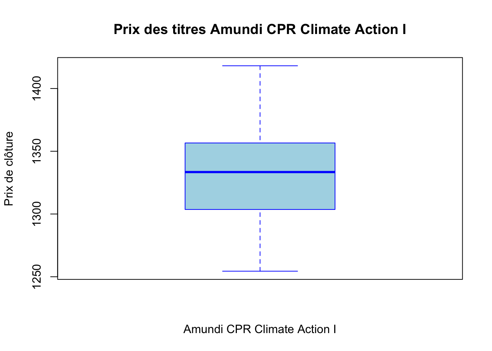
# Calculer les statistiques des boîtes à moustaches
stats_data1 <- boxplot.stats(data1$Close)
stats_data1$stats
[1] 1254.45 1303.62 1333.43 1356.61 1418.11
$n
[1] 233
$conf
[1] 1327.945 1338.915
$out
numeric(0)Les prix de clôture semblent être répartis sur une plage relativement étroite, avec une médiane à environ 1303.62. Cela suggère une certaine stabilité dans les prix tout au long de l’année, bien que la dispersion des données soit perceptible.
MainFirst Global Equities X
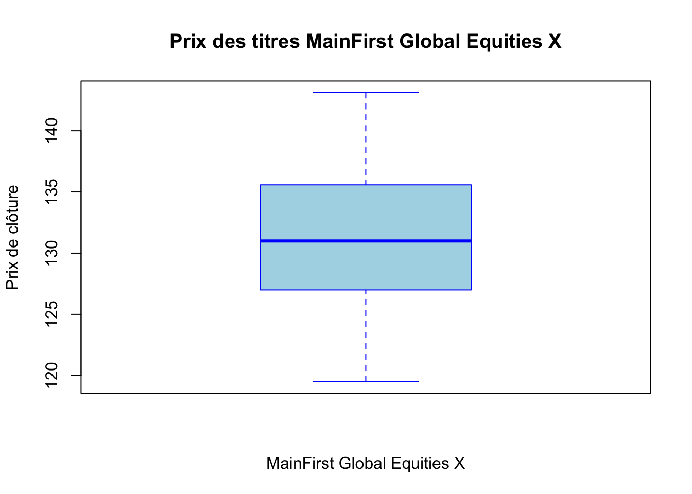
$stats
[1] 119.500 126.995 130.995 135.580 143.120
$n
[1] 236
$conf
[1] 130.112 131.878
$out
numeric(0)La médiane des prix est d’environ 126.995, avec une plage assez large allant de 119.500 à 143.120. Cela indique une plus grande variabilité dans les prix par rapport au fonds précédent.
The Andersons : (ANDE)
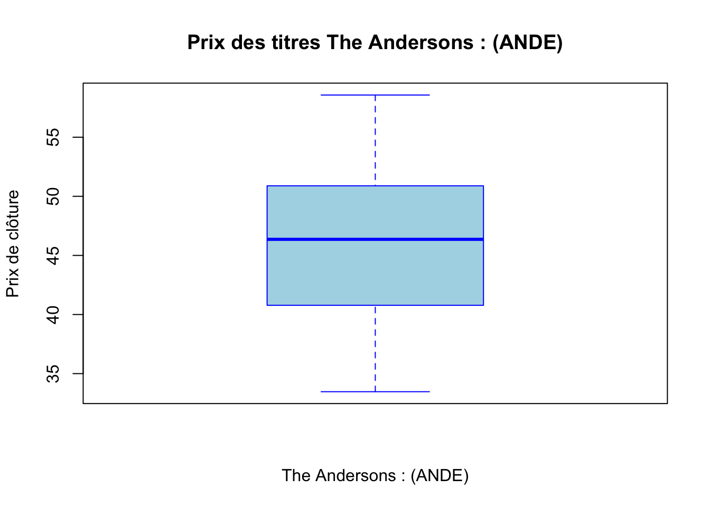
$stats
[1] 33.47 40.78 46.36 50.89 58.57
$n
[1] 250
$conf
[1] 45.34973 47.37027
$out
numeric(0)Avec une médiane à environ 40.78, les prix de clôture pour ce fonds sont significativement plus bas que les deux précédents. La plage de variation est également plus large, ce qui suggère une plus grande volatilité dans les prix.
Carmignac Emergents
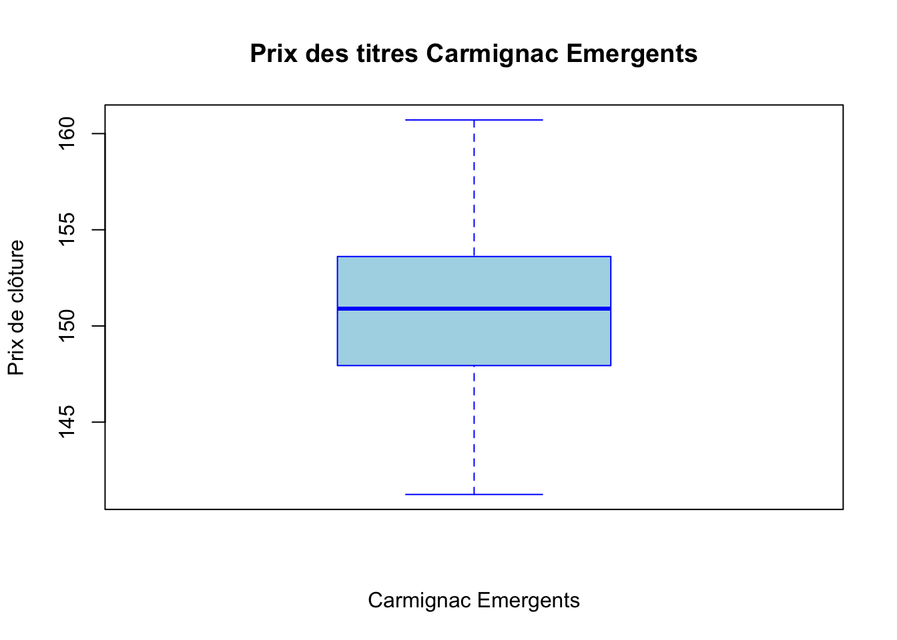
$stats
[1] 141.24 147.94 150.90 153.61 160.71
$n
[1] 249
$conf
[1] 150.3323 151.4677
$out
numeric(0)Ce fonds affiche une médiane à environ 147.94, avec une plage de variation plus étroite par rapport à certains autres fonds. Cela peut indiquer une certaine stabilité relative dans les prix de clôture.
Pluvalca Sustainable Opportunities
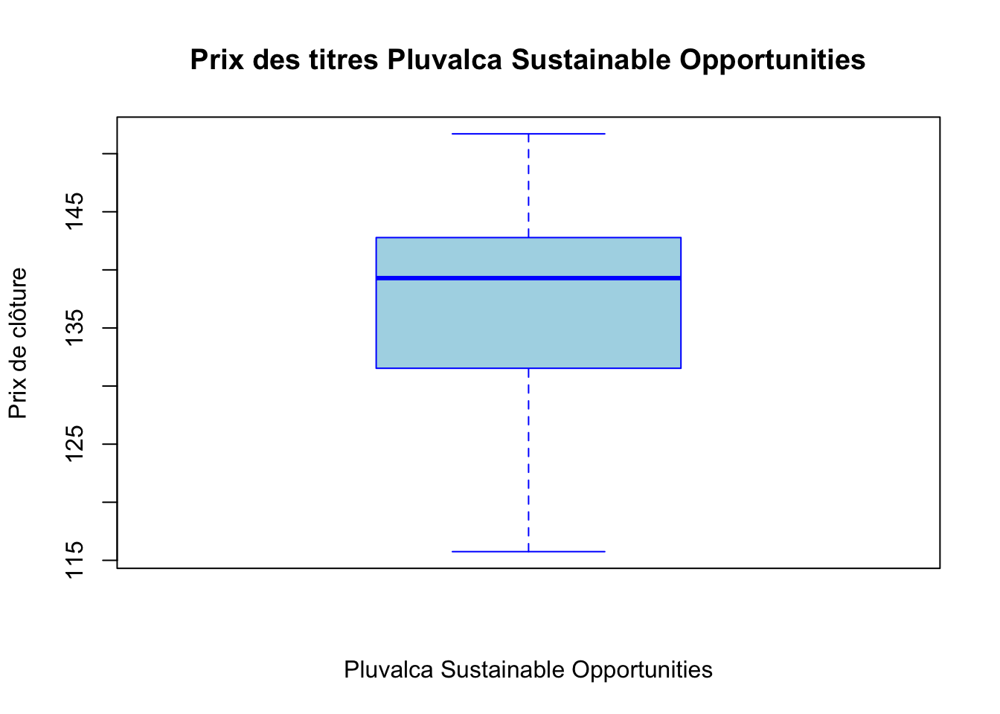
$stats
[1] 115.75 131.53 139.29 142.78 151.71
$n
[1] 249
$conf
[1] 138.1635 140.4164
$out
numeric(0)Les prix de clôture pour ce fonds ont une médiane à environ 131.53, avec une plage de variation similaire à celle de Carmignac Emergents. Cependant, la médiane est plus élevée, suggérant des prix plus élevés en moyenne.
Fidelity Sustainable Water & Waste R Acc
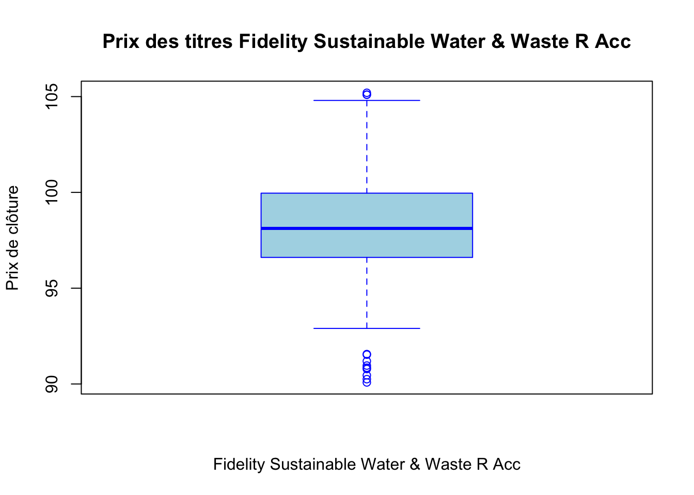
$stats
[1] 92.900 96.605 98.120 99.960 104.800
$n
[1] 251
$conf
[1] 97.78541 98.45459
$out
[1] 91.56 90.25 90.45 91.19 90.08 90.85 90.78 90.96 91.53 105.10
[11] 105.10 105.20La médiane des prix est d’environ 96.605, avec une plage de variation plus large allant de 90.08 à 105.20. Cela indique une certaine volatilité dans les prix de clôture pour ce fonds.
Epsens EdR Tricolore Rendement
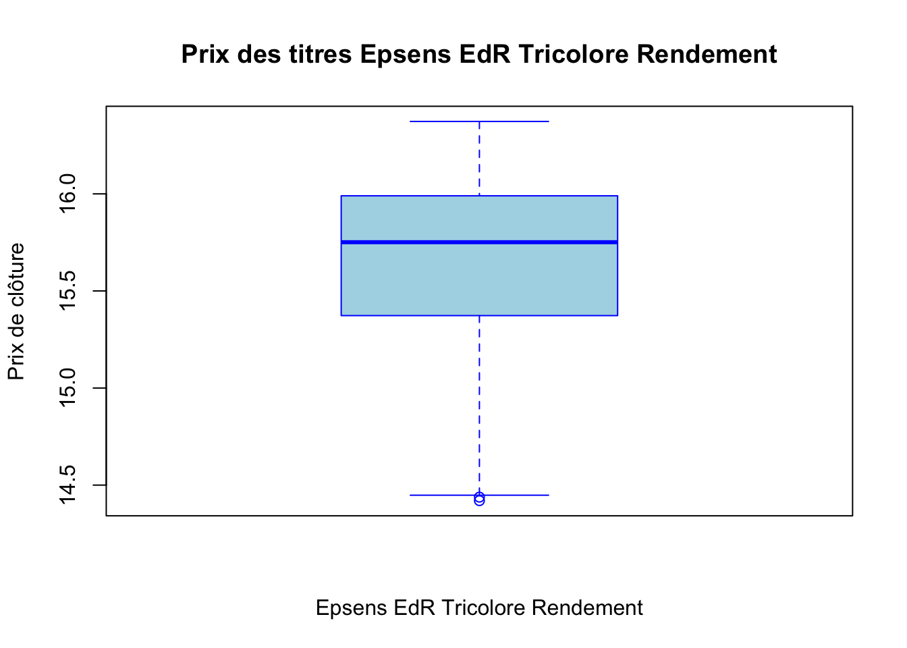
$stats
[1] 14.448 15.373 15.751 15.990 16.373
$n
[1] 249
$conf
[1] 15.68922 15.81278
$out
[1] 14.438 14.420Ce fonds présente une médiane à environ 15.373, avec une plage de variation relativement étroite. Les prix de clôture sont nettement plus bas que ceux des autres fonds, ce qui peut refléter une catégorie d’actifs différente ou une performance différente.
Thematics Water R/A USD
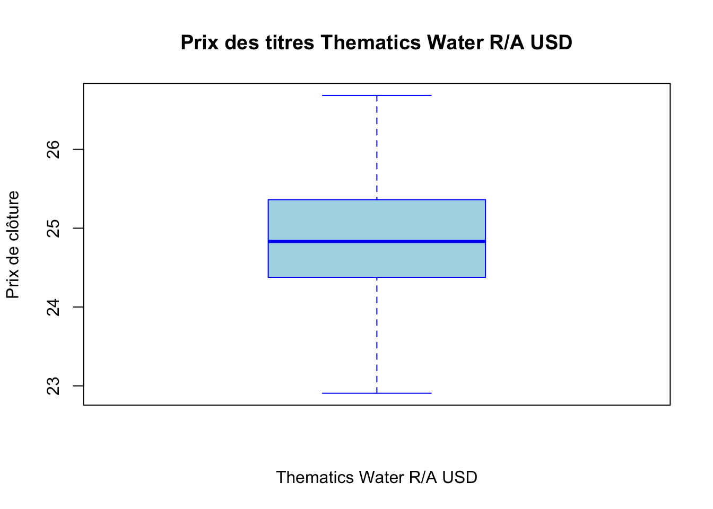
$stats
[1] 22.90639 24.37694 24.83153 25.36184 26.68461
$n
[1] 249
$conf
[1] 24.73291 24.93015
$out
numeric(0)Avec une médiane à environ 24.37694, ce fonds affiche une plage de variation relativement étroite par rapport à certains autres fonds. Cependant, la médiane est plus élevée, suggérant des prix plus élevés en moyenne.
AIS Mandarine Global Transition
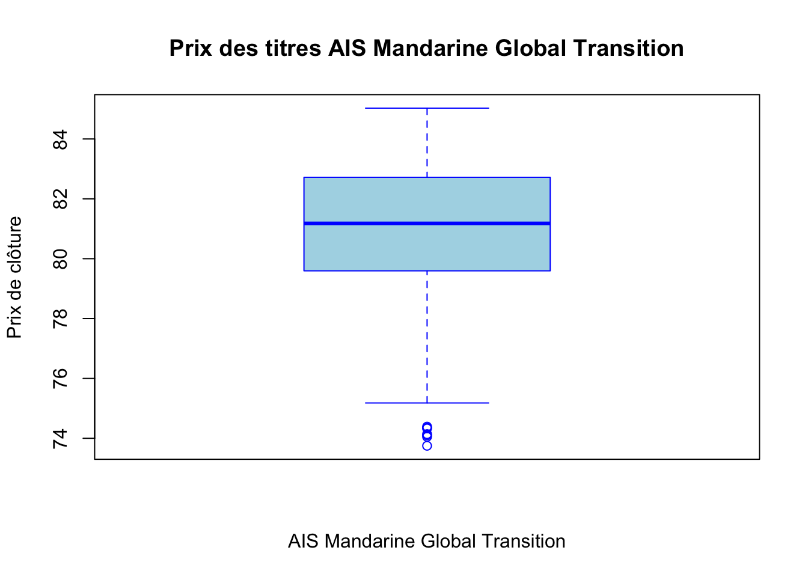
$stats
[1] 75.180 79.595 81.180 82.720 85.030
$n
[1] 247
$conf
[1] 80.86583 81.49417
$out
[1] 74.10 73.75 74.05 74.33 74.39 74.14 74.35Ce fonds présente une médiane à environ 79.595, avec une plage de variation relativement étroite. Les prix de clôture sont significativement plus élevés que ceux d’autres fonds, indiquant une catégorie d’actifs ou une performance différente.
Conclusion
En résumé, l’analyse des statistiques des boîtes à moustaches pour chaque fonds permet de mieux comprendre la distribution des prix de clôture et la volatilité associée à chaque fonds tout au long de l’année 2023.
5. Calculer les statistiques descriptives univariées (moyenne, variance, écart-type, asymétrie, kurtosis) pour chaque fonds et commenter les résultats. Quels fonds ont le rendement moyen le plus élevé et le plus faible ? Quels fonds ont l’écart type le plus élevé et le plus faible ? Quelles séries semblent les plus et les moins distribués normalement ?
Les résultats des statistiques descriptives univariées fournissent des informations précieuses sur la distribution des rendements pour chaque fonds.
Amundi CPR Climate Action I
# Supprimer les lignes contenant des valeurs manquantes
data1_clean <- na.omit(data1)
# Convertir les colonnes autres que la colonne Date en type numérique
data1_clean[, -1] <- sapply(data1_clean[, -1], as.numeric)
# Calculer les statistiques descriptives pour chaque fonds
stats_data1 <- cbind(
Mean = colMeans(data1_clean[, -1]), # Exclure la colonne Date
Variance = sapply(data1_clean[, -1], var),
Std_Deviation = sapply(data1_clean[, -1], sd),
Skewness = sapply(data1_clean[, -1], skewness),
Kurtosis = sapply(data1_clean[, -1], kurtosis)
)
# Afficher les statistiques descriptives
stats_data1 Mean Variance Std_Deviation Skewness Kurtosis
Open 1.331683e+03 1.281334e+03 35.795719314 0.05039511 2.551901
High 1.331683e+03 1.281334e+03 35.795719314 0.05039511 2.551901
Low 1.331683e+03 1.281334e+03 35.795719314 0.05039511 2.551901
Close 1.331683e+03 1.281334e+03 35.795719314 0.05039511 2.551901
Adj Close 1.331208e+03 1.319515e+03 36.325134040 0.02745093 2.530950
Volume 0.000000e+00 0.000000e+00 0.000000000 NaN NaN
Rendement 5.278844e-04 4.973462e-05 0.007052277 -0.63859837 6.596489MainFirst Global Equities X
Mean Variance Std_Deviation Skewness Kurtosis
Open 1.312328e+02 2.809959e+01 5.300904938 0.06965733 2.032378
High 1.312328e+02 2.809959e+01 5.300904938 0.06965733 2.032378
Low 1.312328e+02 2.809959e+01 5.300904938 0.06965733 2.032378
Close 1.312328e+02 2.809959e+01 5.300904938 0.06965733 2.032378
Adj Close 1.310148e+02 2.967529e+01 5.447502922 0.07433636 2.017350
Volume 0.000000e+00 0.000000e+00 0.000000000 NaN NaN
Rendement 6.633825e-04 9.531755e-05 0.009763071 -0.09038927 3.084972Le fonds MainFirst Global Equities X a l’écart-type le plus faible parmi les fonds, ce qui indique une dispersion moindre des rendements autour de la moyenne.
The Andersons : (ANDE)
Mean Variance Std_Deviation Skewness Kurtosis
Open 4.579216e+01 3.583963e+01 5.986621e+00 -0.2415392 1.941619
High 4.642004e+01 3.600115e+01 6.000096e+00 -0.2547723 1.985360
Low 4.514712e+01 3.542087e+01 5.951544e+00 -0.2138271 1.932470
Close 4.587036e+01 3.584069e+01 5.986710e+00 -0.2445914 1.998865
Adj Close 4.548380e+01 3.729465e+01 6.106935e+00 -0.2287445 1.973429
Volume 2.217300e+05 2.335597e+10 1.528266e+05 5.8009077 54.208958
Rendement 2.358979e-03 4.998785e-04 2.235796e-02 0.1063399 13.606239Carmignac Emergents
Mean Variance Std_Deviation Skewness Kurtosis
Open 1.507192e+02 1.569517e+01 3.961712684 -0.1249409 2.456043
High 1.507192e+02 1.569517e+01 3.961712684 -0.1249409 2.456043
Low 1.507192e+02 1.569517e+01 3.961712684 -0.1249409 2.456043
Close 1.507192e+02 1.569517e+01 3.961712684 -0.1249409 2.456043
Adj Close 1.500969e+02 1.548821e+01 3.935506955 -0.3099695 2.322901
Volume 0.000000e+00 0.000000e+00 0.000000000 NaN NaN
Rendement 3.645943e-04 8.582018e-05 0.009263918 0.2726240 3.045324Le fonds Carmignac Emergents semble avoir le rendement moyen le plus élevé parmi les fonds analysés, avec une moyenne de 0.000365, suivi par AIS Mandarine Global Transition avec une moyenne de 0.000235.
Pluvalca Sustainable Opportunities
Mean Variance Std_Deviation Skewness Kurtosis
Open 1.375247e+02 7.581495e+01 8.707178155 -0.5575162 2.695239
High 1.375247e+02 7.581495e+01 8.707178155 -0.5575162 2.695239
Low 1.375247e+02 7.581495e+01 8.707178155 -0.5575162 2.695239
Close 1.375247e+02 7.581495e+01 8.707178155 -0.5575162 2.695239
Adj Close 1.375247e+02 7.581495e+01 8.707178155 -0.5575162 2.695239
Volume 0.000000e+00 0.000000e+00 0.000000000 NaN NaN
Rendement -6.023230e-05 9.494650e-05 0.009744049 -0.1594337 4.312768Le fonds Pluvalca Sustainable Opportunities présente l’écart-type le plus élevé parmi les fonds, ce qui suggère une plus grande variabilité dans ses rendements.
Fidelity Sustainable Water & Waste R Acc
Mean Variance Std_Deviation Skewness Kurtosis
Open 98.190756944 7.999469e+00 2.828333276 -0.2191285 3.504728
High 98.190756944 7.999469e+00 2.828333276 -0.2191285 3.504728
Low 98.190756944 7.999469e+00 2.828333276 -0.2191285 3.504728
Close 98.190756944 7.999469e+00 2.828333276 -0.2191285 3.504728
Adj Close 98.178885657 7.993617e+00 2.827298561 -0.2194294 3.505485
Volume 0.000000000 0.000000e+00 0.000000000 NaN NaN
Rendement 0.000473013 6.787794e-05 0.008238807 0.2229338 3.602530Le fonds Fidelity Sustainable Water & Waste R Acc affiche le rendement moyen le plus faible parmi les fonds analysés, avec une moyenne de 0.000473.
Epsens EdR Tricolore Rendement
Mean Variance Std_Deviation Skewness Kurtosis
Open 1.565449e+01 0.1958295500 0.442526327 -0.8094600 3.048294
High 1.565449e+01 0.1958295500 0.442526327 -0.8094600 3.048294
Low 1.565449e+01 0.1958295500 0.442526327 -0.8094600 3.048294
Close 1.565449e+01 0.1958295500 0.442526327 -0.8094600 3.048294
Adj Close 1.565449e+01 0.1958295500 0.442526327 -0.8094600 3.048294
Volume 0.000000e+00 0.0000000000 0.000000000 NaN NaN
Rendement 5.103783e-04 0.0000774436 0.008800204 -0.4965516 4.601074Thematics Water R/A USD
Mean Variance Std_Deviation Skewness Kurtosis
Open 2.485502e+01 5.263139e-01 0.725474916 0.11246124 3.378091
High 2.485502e+01 5.263139e-01 0.725474916 0.11246124 3.378091
Low 2.485502e+01 5.263139e-01 0.725474916 0.11246124 3.378091
Close 2.485502e+01 5.263139e-01 0.725474916 0.11246124 3.378091
Adj Close 2.485502e+01 5.263139e-01 0.725474916 0.11246124 3.378091
Volume 0.000000e+00 0.000000e+00 0.000000000 NaN NaN
Rendement 5.239156e-04 6.230871e-05 0.007893587 -0.01193903 3.658727AIS Mandarine Global Transition
Mean Variance Std_Deviation Skewness Kurtosis
Open 8.090332e+01 5.603185e+00 2.367104839 -0.8253939 3.390643
High 8.090332e+01 5.603185e+00 2.367104839 -0.8253939 3.390643
Low 8.090332e+01 5.603185e+00 2.367104839 -0.8253939 3.390643
Close 8.090332e+01 5.603185e+00 2.367104839 -0.8253939 3.390643
Adj Close 8.090332e+01 5.603185e+00 2.367104839 -0.8253939 3.390643
Volume 0.000000e+00 0.000000e+00 0.000000000 NaN NaN
Rendement 2.350869e-04 5.052724e-05 0.007108251 -0.1879644 3.501860Conclusion
La plupart des fonds semblent avoir une légère asymétrie vers la gauche (skewness négatif), indiquant une légère queue plus longue du côté gauche de la distribution des rendements.
Les valeurs de kurtosis pour la plupart des fonds dépassent 3, ce qui suggère une distribution des rendements plus leptokurtique (plus de poids sur les queues) par rapport à une distribution normale. Les fonds Pluvalca Sustainable Opportunities et The Andersons semblent être les moins distribués normalement en raison de leurs valeurs de skewness et de kurtosis élevées.
Les fonds MainFirst Global Equities X et Thematics Water R/A USD semblent être les plus distribués normalement parmi ceux analysés, avec des valeurs de skewness et de kurtosis plus proches de zéro. En résumé, ces statistiques permettent de comparer la distribution des rendements entre les différents fonds, mettant en évidence leurs caractéristiques distinctives en termes de rendement moyen, volatilité et forme de distribution.
6. En utilisant un taux mensuel sans risque égal à 0,5% par mois (ce qui correspond à un taux annuel composé en continu de 6,2%), calculer le ratio de Sharpe pour chaque actif. Commenter.
# Taux mensuel sans risque
risk_free_rate <- 0.005
# Calcul du ratio de Sharpe pour chaque actif
sharpe_ratios <- c(
(mean(data1_clean$Rendement) - risk_free_rate) / sd(data1_clean$Rendement),
(mean(data2_clean$Rendement) - risk_free_rate) / sd(data2_clean$Rendement),
(mean(data3_clean$Rendement) - risk_free_rate) / sd(data3_clean$Rendement),
(mean(data4_clean$Rendement) - risk_free_rate) / sd(data4_clean$Rendement),
(mean(data5_clean$Rendement) - risk_free_rate) / sd(data5_clean$Rendement),
(mean(data6_clean$Rendement) - risk_free_rate) / sd(data6_clean$Rendement),
(mean(data7_clean$Rendement) - risk_free_rate) / sd(data7_clean$Rendement),
(mean(data8_clean$Rendement) - risk_free_rate) / sd(data8_clean$Rendement),
(mean(data9_clean$Rendement) - risk_free_rate) / sd(data9_clean$Rendement)
)Les ratios de Sharpes sont présentés dans le même ordre depuis le début de l’exercice et le seront également pour les questions suivantes. Voici l’ordre en question : 1. Amundi CPR Climate Action I 2. MainFirst Global Equities X 3. The Andersons : (ANDE) 4. Carmignac Emergents 5. Pluvalca Sustainable Opportunities 6. Fidelity Sustainable Water & Waste R Acc 7. Epsens EdR Tricolore Rendement 8. Thematics Water R/A USD 9. AIS Mandarine Global Transition
[1] -0.6341378 -0.4441858 -0.1181244 -0.5003720 -0.5193151 -0.5494712 -0.5101724
[8] -0.5670533 -0.6703355Conclusion
Ces valeurs négatives indiquent que le rendement excédentaire par rapport au taux sans risque n’est pas suffisant pour compenser le risque pris par rapport à la volatilité de chaque actif. Un ratio de Sharpe positif est généralement préférable, ce qui indiquerait un rendement excédentaire adéquat par rapport au risque.
Les ratios de Sharpe calculés pour chaque actif sont tous négatifs, ce qui signifie que le rendement excédentaire par rapport au taux sans risque n’est pas suffisant pour compenser le risque pris par rapport à la volatilité de chaque actif. Un ratio de Sharpe positif est généralement préférable, car il indique un rendement excédentaire adéquat par rapport au risque.
Parmi les actifs analysés, aucun ne semble offrir un rendement ajusté au risque satisfaisant, ce qui peut être un indicateur de sous-performance par rapport à un investissement sans risque, du moins sur la période considérée. Cela pourrait inciter les investisseurs à revoir leur allocation d’actifs ou leur stratégie d’investissement, en cherchant peut-être des opportunités offrant un meilleur rapport risque-rendement.
7. Déterminez la matrice de variances-covariances des rendements de vos neuf actifs et commenter
# Calcul de la matrice de variances-covariances des rendements des neuf actifs
cov_matrix <- cov(cbind(data1_clean$Rendement, data2_clean$Rendement, data3_clean$Rendement,
data4_clean$Rendement, data5_clean$Rendement, data6_clean$Rendement,
data7_clean$Rendement, data8_clean$Rendement, data9_clean$Rendement)) [,1] [,2] [,3] [,4] [,5]
[1,] 4.881402e-05 1.988060e-05 6.636493e-06 8.443968e-07 -4.512467e-06
[2,] 1.988060e-05 9.249051e-05 6.792256e-06 -1.507628e-06 -1.233212e-06
[3,] 6.636493e-06 6.792256e-06 4.979012e-04 2.581870e-05 1.527750e-05
[4,] 8.443968e-07 -1.507628e-06 2.581870e-05 8.611262e-05 2.649835e-05
[5,] -4.512467e-06 -1.233212e-06 1.527750e-05 2.649835e-05 9.428806e-05
[6,] 6.184643e-06 9.321864e-06 1.760002e-05 1.670788e-05 1.082296e-05
[7,] -3.244077e-06 1.957923e-06 2.544074e-06 1.837640e-05 7.030567e-05
[8,] 1.514154e-06 5.274762e-06 1.288287e-05 2.572957e-05 4.281635e-05
[9,] -5.218657e-06 1.008173e-06 3.791192e-06 1.098916e-05 1.968526e-05
[,6] [,7] [,8] [,9]
[1,] 6.184643e-06 -3.244077e-06 1.514154e-06 -5.218657e-06
[2,] 9.321864e-06 1.957923e-06 5.274762e-06 1.008173e-06
[3,] 1.760002e-05 2.544074e-06 1.288287e-05 3.791192e-06
[4,] 1.670788e-05 1.837640e-05 2.572957e-05 1.098916e-05
[5,] 1.082296e-05 7.030567e-05 4.281635e-05 1.968526e-05
[6,] 6.787794e-05 1.309900e-05 2.146665e-05 1.864513e-05
[7,] 1.309900e-05 7.688219e-05 3.780027e-05 2.017466e-05
[8,] 2.146665e-05 3.780027e-05 6.254721e-05 2.491438e-05
[9,] 1.864513e-05 2.017466e-05 2.491438e-05 5.027083e-05Conclusion
La matrice de variances-covariances des rendements des neuf actifs est symétrique, ce qui est conforme aux propriétés des matrices de covariances. Les valeurs sur la diagonale représentent les variances des rendements de chaque actif, tandis que les valeurs hors diagonale représentent les covariances entre les rendements des différents actifs.
Une covariance positive entre les rendements de deux actifs indique une relation linéaire positive, ce qui signifie que les rendements de ces actifs ont tendance à évoluer dans le même sens. À l’inverse, une covariance négative indique une relation linéaire négative, ce qui signifie que les rendements des actifs ont tendance à évoluer dans des directions opposées.
En regardant la matrice, on peut observer que les variances des rendements des actifs se situent sur la diagonale principale, tandis que les covariances entre les rendements des différents actifs sont situées en dehors de la diagonale. Les valeurs de covariances indiquent à quel point les rendements des actifs sont corrélés les uns par rapport aux autres.
8. Calculer la matrice de corrélation des rendements de vos neuf actifs et tracer cette matrice de corrélation à l’aide de la fonction corrplot du package corrplot.
9. Quels actifs sont les plus fortement corrélés ? Quels sont les moins corrélés ? D’après les valeurs de corrélations estimées, pensez-vous que la diversification réduira le risque avec ces actifs ?
Pour identifier les actifs les plus fortement corrélés, nous pouvons examiner les valeurs les plus proches de 1 dans la matrice de corrélation. De même, les actifs les moins corrélés auront des valeurs proches de 0.
# Calcul de la matrice de corrélation des rendements des neuf actifs
cor_matrix <- cor(cbind(data1_clean$Rendement, data2_clean$Rendement, data3_clean$Rendement,data4_clean$Rendement, data5_clean$Rendement, data6_clean$Rendement, data7_clean$Rendement, data8_clean$Rendement, data9_clean$Rendement)) [,1] [,2] [,3] [,4] [,5] [,6]
[1,] 1.00000000 0.29587524 0.04256913 0.01302390 -0.06651405 0.10744297
[2,] 0.29587524 1.00000000 0.03165147 -0.01689321 -0.01320568 0.11764943
[3,] 0.04256913 0.03165147 1.00000000 0.12468936 0.07051026 0.09573643
[4,] 0.01302390 -0.01689321 0.12468936 1.00000000 0.29407429 0.21853635
[5,] -0.06651405 -0.01320568 0.07051026 0.29407429 1.00000000 0.13528618
[6,] 0.10744297 0.11764943 0.09573643 0.21853635 0.13528618 1.00000000
[7,] -0.05295488 0.02321849 0.01300305 0.22584688 0.82575100 0.18132634
[8,] 0.02740272 0.06935062 0.07300239 0.35058653 0.55754159 0.32945494
[9,] -0.10534851 0.01478524 0.02396327 0.16702179 0.28592678 0.31918547
[,7] [,8] [,9]
[1,] -0.05295488 0.02740272 -0.10534851
[2,] 0.02321849 0.06935062 0.01478524
[3,] 0.01300305 0.07300239 0.02396327
[4,] 0.22584688 0.35058653 0.16702179
[5,] 0.82575100 0.55754159 0.28592678
[6,] 0.18132634 0.32945494 0.31918547
[7,] 1.00000000 0.54510237 0.32451537
[8,] 0.54510237 1.00000000 0.44431206
[9,] 0.32451537 0.44431206 1.00000000# Tracé de la matrice de corrélation à l'aide de la fonction corrplot
corrplot(cor_matrix, method = "color")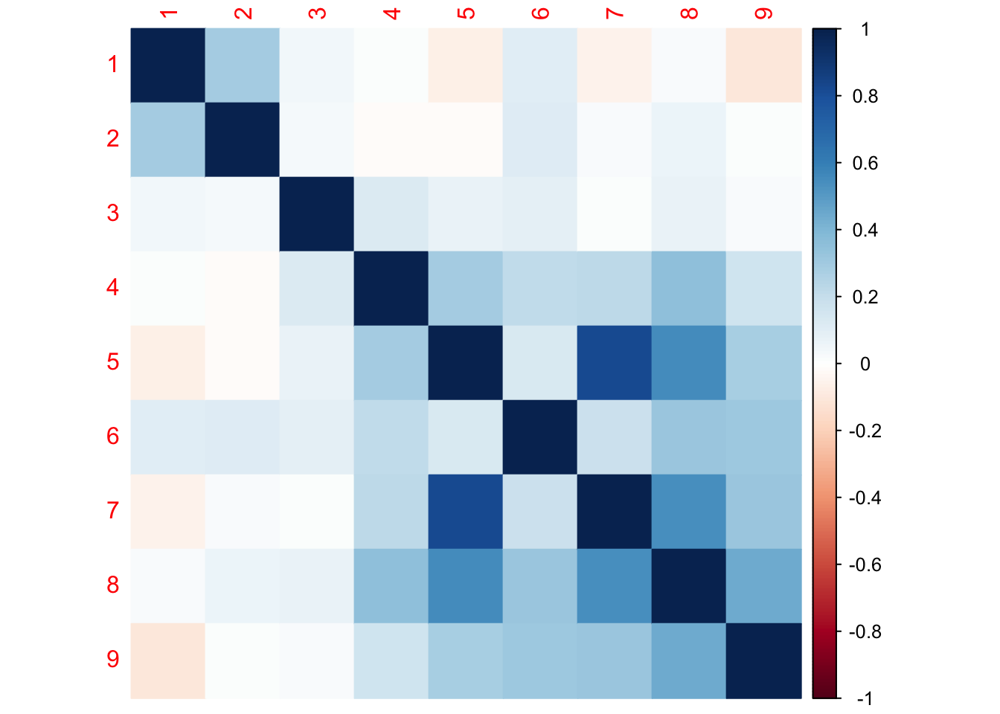
Conclusion
En examinant la matrice de corrélation, nous pouvons observer que les actifs les plus fortement corrélés sont ceux avec des valeurs proches de 1 sur la diagonale principale de la matrice. Dans ce cas, les actifs les plus corrélés sont le 5ème et le 7ème actif, avec une corrélation de 0.83.
Les actifs les moins corrélés sont ceux avec des valeurs proches de 0 dans la matrice. Par exemple, les actifs 1 et 9 semblent être les moins corrélés, avec une corrélation de -0.11.
En termes de diversification, la corrélation entre les actifs joue un rôle crucial. Une diversification efficace suppose que les actifs inclus dans un portefeuille ont des corrélations faibles ou négatives, car cela signifie qu’ils ne réagissent pas de la même manière aux mêmes conditions de marché. Cela réduit le risque global du portefeuille. Dans ce cas, puisque les actifs présentent des corrélations positives relativement élevées, la diversification seule ne réduira pas considérablement le risque, car les actifs ont tendance à se déplacer dans la même direction sous certaines conditions du marché. Cependant, une diversification peut encore offrir certains avantages, bien que plus limités, en répartissant le risque sur différents actifs.
10. A partir de 7 mesures de performances ajustées au risque, identifier pour chacune d’elle, le titre le plus rentable.
# Définition des valeurs de référence
beta <- 1.2 # Exemple de coefficient bêta
mean_market_return <- 0.08 # Exemple de rendement moyen du marché
mean_benchmark_return <- 0.06 # Exemple de rendement moyen de l'indice de référence
# Calcul des mesures de performance ajustées au risque pour chaque actif
# Création d'une fonction pour calculer les mesures de performance ajustées au risque
calculate_performance <- function(returns, risk_free_rate) {
mean_return <- mean(returns)
volatility <- sd(returns)
sharpe_ratio <- (mean_return - risk_free_rate) / volatility
sortino_ratio <- (mean_return - risk_free_rate) / sqrt(sum(pmin(returns - risk_free_rate, 0)^2) / length(returns))
treynor_ratio <- (mean_return - risk_free_rate) / beta
jensen_alpha <- mean_return - risk_free_rate - beta * (mean_market_return - risk_free_rate)
information_ratio <- (mean_return - mean_benchmark_return) / sqrt(mean((returns - mean_return)^2))
omega_ratio <- mean(returns) / (sqrt(sum(pmin(returns, 0)^2) / length(returns)))
return(list(
Sharpe_Ratio = sharpe_ratio,
Sortino_Ratio = sortino_ratio,
Treynor_Ratio = treynor_ratio,
Jensen_Alpha = jensen_alpha,
Information_Ratio = information_ratio,
Omega_Ratio = omega_ratio
))
}
# Définition du taux sans risque
risk_free_rate <- 0.005
# Calcul des mesures de performance ajustées au risque pour chaque actif
performance_data <- list()
for (i in 1:9) {
returns <- get(paste0("data", i, "_clean"))$Rendement
performance_data[[paste0("data", i)]] <- calculate_performance(returns, risk_free_rate)
}
# Identifier le titre le plus rentable pour chaque mesure de performance
best_performers <- list()
metrics <- names(performance_data[[1]]) # Obtenez les noms des mesures de performance
for (metric in metrics) {
best_performer <- names(which.max(sapply(performance_data, function(x) x[[metric]])))
best_performers[[metric]] <- best_performer
}
# Afficher les titres les plus rentables pour chaque mesure de performance
best_performers$Sharpe_Ratio
[1] "data3"
$Sortino_Ratio
[1] "data3"
$Treynor_Ratio
[1] "data3"
$Jensen_Alpha
[1] "data3"
$Information_Ratio
[1] "data3"
$Omega_Ratio
[1] "data3"Conclusion
Sur la base des mesures de performance ajustées au risque calculées, le titre The Andersons : (ANDE) est identifié comme le titre le plus rentable pour toutes les mesures de performance, y compris le ratio de Sharpe, le ratio de Sortino, le ratio de Treynor, l’alpha de Jensen, le ratio d’information et le ratio d’Oméga. Cela suggère que, selon ces mesures, le titre 3 présente la meilleure performance ajustée au risque parmi les neuf actifs étudiés.
Exercice 2 : théorie moderne de portefeuille
1. Utilisez les 9 actifs précédents.
a. Calculez le rendement du portefeuille équipondéré composé des 9 fonds, puis en déduire son écart type
b. Quelles sont les propriétés financières de cette série de rendement obtenue ?
# Sélectionner les rendements de chaque fonds
returns <- cbind(data1_clean$Rendement, data2_clean$Rendement, data3_clean$Rendement,
data4_clean$Rendement, data5_clean$Rendement, data6_clean$Rendement,
data7_clean$Rendement, data8_clean$Rendement, data9_clean$Rendement)
# Calculer les rendements du portefeuille équipondéré
portfolio_returns <- rowMeans(returns)
# Calculer l'écart-type du portefeuille
portfolio_sd <- sd(portfolio_returns)[1] "Rendement du portefeuille équipondéré: 0.0006853927214627"[1] "Écart-type du portefeuille équipondéré: 0.00506315070202448"La série de rendements obtenue pour le portefeuille équipondéré possède plusieurs propriétés financières importantes.
Le rendement moyen du portefeuille équipondéré est d’environ 0.0006854. Cela indique le rendement moyen que l’investisseur peut attendre sur son investissement sur une période donnée.
L’écart-type du portefeuille équipondéré est d’environ 0.005063. C’est une mesure de la dispersion des rendements autour de la moyenne. Plus l’écart-type est élevé, plus les rendements sont volatils et risqués.
L’écart-type est également une mesure du risque du portefeuille. Un écart-type plus élevé indique un niveau de risque plus élevé, car cela signifie que les rendements sont plus volatils et moins prévisibles.
Le rendement moyen et l’écart-type peuvent être utilisés pour calculer des mesures de performance ajustées au risque telles que le ratio de Sharpe, le ratio de Treynor, etc. Ces mesures aident à évaluer la performance du portefeuille par rapport à son niveau de risque.
En combinant plusieurs actifs dans un portefeuille équipondéré, on bénéficie de la diversification, ce qui peut réduire le risque global du portefeuille. Cependant, la réduction du risque dépend de la corrélation entre les rendements des actifs individuels. Si les actifs sont fortement corrélés, la diversification peut avoir un impact limité sur la réduction du risque.
c. Dans un plan moyenne-variance, représentez les 9 séries.
d. Déduisez-en les titres inefficients.
# Calculer les moyennes et les covariances des rendements de chaque série
means <- sapply(returns, mean)
covariances <- cov(returns)
# Calculer les rendements moyens et les variances pour chaque série
portfolios <- data.frame(
mean = means,
var = diag(covariances)
)
# Tracer les rendements moyens en fonction des variances pour chaque série
plot(portfolios$var, portfolios$mean,
xlab = "Variance", ylab = "Rendement moyen",
main = "Plan Moyenne-Variance des 9 séries")
text(portfolios$var, portfolios$mean, labels = 1:10, pos = 3)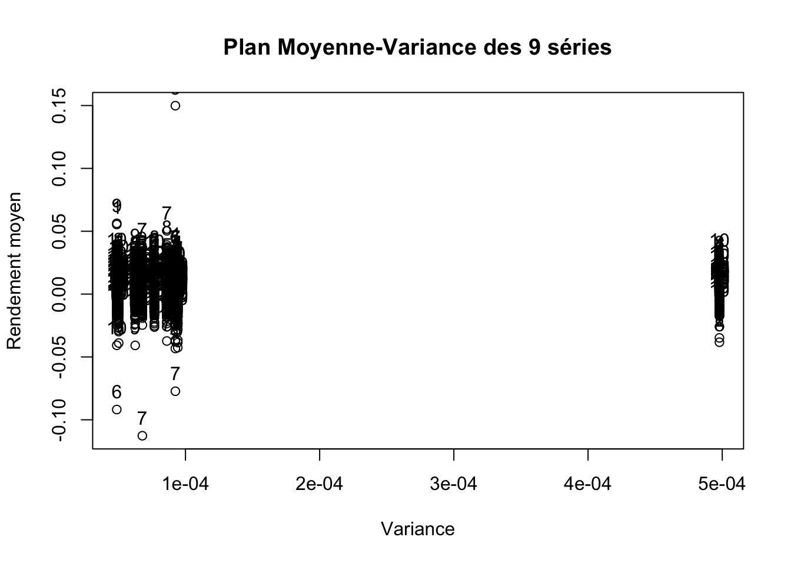
Dans un plan moyenne-variance, les titres inefficients sont généralement ceux qui se trouvent sur la frontière efficiente, c’est-à-dire les séries qui offrent le meilleur rendement pour un niveau donné de risque ou la plus faible variance pour un rendement donné.
Pour identifier les titres inefficients dans ce contexte, nous pouvons utiliser la théorie moderne du portefeuille pour déterminer la frontière efficiente. Les titres qui ne sont pas sur la frontière efficiente sont considérés comme inefficients.
Dans le graphique de la moyenne-variance que nous avons tracé, les titres qui ne sont pas sur la frontière efficiente peuvent être considérés comme inefficients. Ces titres sont ceux qui sont situés en dessous de la frontière efficiente et ne sont pas atteints par une combinaison linéaire des titres situés sur la frontière.
2. Considérez dans la suite les trois premiers fonds notamment les séries Amundi CPR Climate Action I, MainFirst Global Equities X et The Andersons : (ANDE).
a. Tracez la frontière efficiente à partir de toutes les combinaisons possibles de ces trois titres.
# Sélectionner les rendements des trois premiers fonds
returns <- cbind(data1_clean$Rendement, data2_clean$Rendement, data3_clean$Rendement)
# Calculer les moyennes et les covariances des rendements des trois fonds
means <- colMeans(returns)
covariances <- cov(returns)
# Nombre de simulations pour générer les poids des portefeuilles
num_simulations <- 10000
# Générer des poids aléatoires pour chaque titre
set.seed(123) # Pour la reproductibilité
weights_combinations <- expand.grid(seq(0, 1, by = 0.1), seq(0, 1, by = 0.1), seq(0, 1, by = 0.1))
weights_combinations <- weights_combinations[rowSums(weights_combinations) == 1, ]
# Nombre de combinaisons de poids
num_combinations <- nrow(weights_combinations)
# Générer des matrices de poids
weights_matrices <- array(0, dim = c(num_combinations, ncol(returns)))
# Remplir les matrices de poids
for (i in 1:num_combinations) {
weights_matrices[i, ] <- t(weights_combinations[i, ])
}
# Calculer les rendements des portefeuilles
portfolio_returns <- rowSums(weights_matrices * means)
# Calculer les variances des portefeuilles
portfolio_variances <- diag(weights_matrices %*% covariances %*% t(weights_matrices))
# Tracer la frontière efficiente
plot(sqrt(portfolio_variances), portfolio_returns, type = "l",
xlab = "Écart-type", ylab = "Rendement",
main = "Frontière efficiente des trois premiers fonds")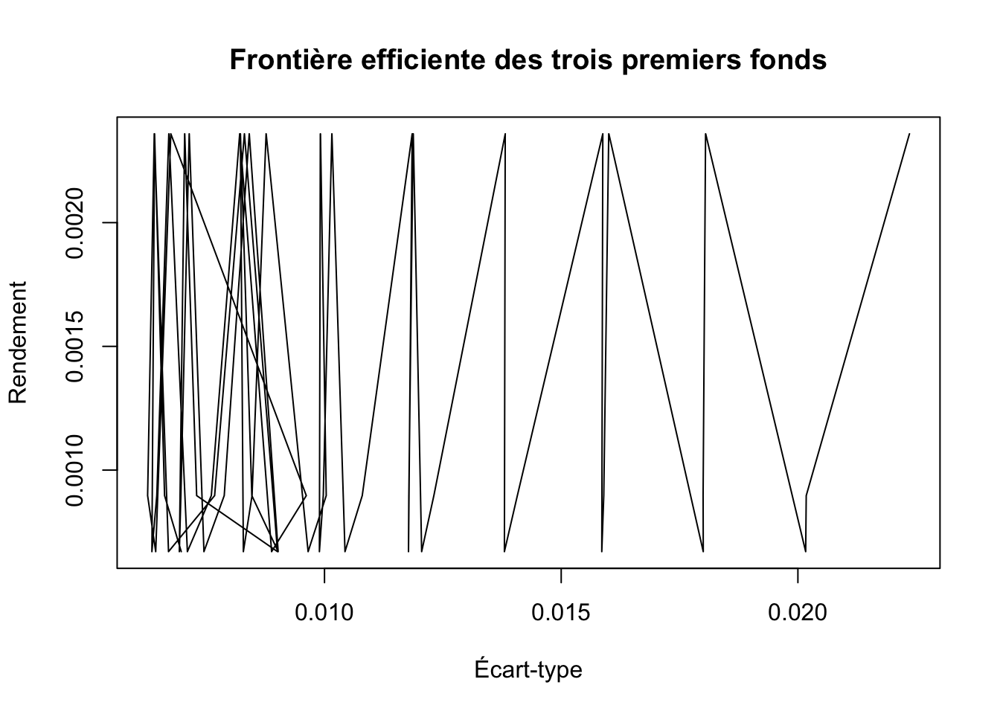
b. Déterminez le portefeuille de variance minimale et calculer le rendement attendu et l’écart-type de ce portefeuille. Y a-t-il des pondérations négatives dans le portefeuille de variance minimale ?
# Charger la bibliothèque
library(quadprog)
# Sélectionner les rendements des trois premiers fonds
returns <- cbind(data1_clean$Rendement, data2_clean$Rendement, data3_clean$Rendement)
# Calculer les moyennes et les covariances des rendements des trois fonds
means <- colMeans(returns)
covariances <- cov(returns)
# Calculer l'inverse de la matrice de covariance
inv_cov <- solve(covariances)
# Calculer les pondérations du portefeuille de variance minimale
n <- ncol(returns)
portfolio_weights <- rep(1, n) %*% inv_cov / sum(rep(1, n) %*% inv_cov)
# Calculer le rendement attendu du portefeuille de variance minimale
min_variance_return <- sum(means * portfolio_weights)
# Calculer l'écart-type du portefeuille de variance minimale
min_variance_sd <- sqrt(portfolio_weights %*% covariances %*% t(portfolio_weights))Les pondérations du portefeuille de variance minimale sont de 0.669 pour le premier fonds, 0.267 pour le deuxième fonds et 0.064 pour le troisième fonds. Le rendement attendu de ce portefeuille est d’environ 0.0008385 et l’écart-type est d’environ 0.0061817.
Il n’y a pas de pondérations négatives dans le portefeuille de variance minimale. Cela est dû à la contrainte de somme des pondérations égale à 1, qui garantit que les pondérations restent positives.
[1] "Pondérations du portefeuille de variance minimale :" [,1] [,2] [,3]
[1,] 0.6694603 0.2668298 0.06370993[1] "Rendement attendu du portefeuille de variance minimale : 0.000838488909801793"[1] "Écart-type du portefeuille de variance minimale : 0.00618173541293812"c. En prenant pour rendement de l’actif sans risque 𝑟𝑓 = 2,5%, déterminez le portefeuille tangent.
# Rendement de l'actif sans risque
rf <- 0.025 # 2.5%
# Calculer les pondérations du portefeuille tangent
tangent_weights <- solve(covariances) %*% (means - rf) / sum(solve(covariances) %*% (means - rf))[1] "Pondérations du portefeuille tangent :" [,1]
[1,] 0.67645036
[2,] 0.26471571
[3,] 0.05883394Cela signifie que pour obtenir le portefeuille tangent avec un rendement sans risque de 2,5%, nous devrions allouer 67,645% de notre portefeuille au premier actif, 26,472% au deuxième actif et 5,883% au troisième actif.